快捷高数教程（1）
高等数学教程笔记1
极限运算与函数分析基础
函数与极限
函数部分主要是奠基于高中的一些基础，这里做一些简单的复习
1.映射与函数
首先来了解以下映射：4
先定义X，Y是两个非空集合。现在有一个法则f，使得X中的每个元素$x$（$X$={$x_0$,$x_1$,$x_2$,…}）,都有唯一的y($Y$={$y_0$,$y_1$,$y_2$,$y_3$,…})与之对应。那么，我们称f是一个映射。
也就是说，这个定义是围绕f的。他是一个这样的法则（或者说规则）让两个非空的集合建立起如定义所言的联系，仅此而已。
也不必太过担心，映射在这本笔记里大概不会再次出现了。
不过，我们把它引出来必有我们的目的：回过头来，我们实际上用一大长串定义干了这样一件事：
现在，让我们开始取其名字：
X：是一个定义域，有写法D,或者写法更明确一些：$D_f$
实际上这是Domain的意思
Y：是一个值域，有写法R,或者同样更明确一些：$R_f$
实际上这是Range的意思。
至于：f，我们刚刚讲过了，这就是一个法则，表明一种对应关系。
依然有这样的更简单的写法：
重复一些以下的要点：
（1）上述定义阐述了三要素：X（定义域），f(法则)，Rf(对应值域)
（2）对于x属于X这回事，对应的y是唯一的。不可以又对应y1同时对应y2.
Q:可以多个x对应一个y吗？可以！事实上，用图片表示是这样的：
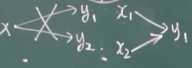
（3）Rf属于Y，但不是Y！！！但特别的：当Rf=Y下，我们又称这样厉害的f叫满射。
（4）在众多的映射中，还有一种特殊的映射：单射。人话就是一一对应
（5）那么，又是单射又是满射如何？这又有名字：一一映射（一夫一妻）因为必须全部对应且一一对应。
正过来叫映射，倒过来又如何？
设 f有如下关系：
是一个单射，那么，我们可以倒过来：对于Y属于Rf而言都有唯一的一个$x$属于$X$.这又是一组对应关系，不过是倒过来的。记作如下：
这样看不出什么联系，我们采用与 f 相关的表示：
好吧，太复杂了，好好回味一下，我们继续折磨：
现在我们来看这样一个内容：
在学习完映射之后，我们来看这样的一个D(定义域),且
换而言之，这个数集是R里的一部分，而f是一个使得：
的映射。
那么，这样来看我们构造了一个映射使得一个实数集映射到了另一个实数集上。这样的映射有一个大家熟悉的名字：函数，简记作：
这下看懂了：
x是一个自变量，y是一个因变量 ，定义域为D，值域是R（不是实数集的R！！！）
构成一个函数的两要素，就可以从动态的角度来看了，这使得我们信息的表达可以更为浓缩：$D_f$ ,$ f$ 就可以了
函数的表达有三种：表格法，图形法，解析法。这个是大家高中就已经熟知的了
说完了定义和表示，我们来看一个函数最广泛的几个性质：
1.有界性
听名字就知道：表明的是一些函数可能是有界限的。但这样的表达不规范。
仔细思考，函数的界限分为两种：不大于一个数和不小于一个数（当然，也可以说是小于一个数或者是大于一个数）
那么，我们说：对于总是一个小于一个数或者是不大于一个数的函数，我们说他有上界。表达是这样的：
这是什么东西呢？先别急，它还有另一个符号，也是在数学中相当常见的：$\exists$ , $\forall$
上面的两个符号，一个表示：存在；另一个表示任意。
那么，上界是唯一的吗？不是的。比如说：
这就有无穷个上界：可以是1，可以是2，可以是$\pi$…总而言之，并不唯一。
那么与之对应的，还会有一个下界：
我们说：对于总是一个大于一个数或者是不小于一个数的函数，我们说他有下界。
同样的，下界也不唯一。
这在我们后面证明极限的存在时是很有必要的！！！
统称起来，我们就可以说：函数是有界的：上下界都有！总而言之，这种情况称为有界的。反之，一个函数若是既没有上界有没有下界，或者是只有上界，或者是只有下界，则称这个函数无界。用数学符号定义有界是这样的：
那么，无界的是这样定义的：
2.单调性
这个性质是讨论函数的变化趋势的：是增加还是减少？我们用这个性质衡量：
当在一个区间里：
这样的性质叫单调递增，
反之：
这样的性质叫单调递减，但是注意，这称之为严格单调，后面我们会讲述什么是严格单调什么是广义单调的。
3.奇偶性
首先声明一点：我们的函数的定义域必须对称：也就是说：函数的$D_f$必须关于原点对称：
实数域$R$是对称的，$[-1,1]$是对称的，以此类推。当：$f(x)=f(-x)$时，我们称呼这样的函数是一个偶函数，反之：$f(-x)=-f(x)$或者$-f(-x)=f(x)$ 则称之为奇函数。
有趣的是：在图像法表达函数时：奇函数关于原点对称，偶函数关于$y$轴对称。
4.周期性
有一些函数很有意思，伴随$x$的增大，我们甚至可以看到$f(x)$会有周期的重现。这时候，我们说这个函数具有周期性，用数学语言的表达是如下的：
这个$l$就是周期，同时，我们讨论的周期常常是最小正周期。
比如说：
这个函数的（最小正）周期就是2$\pi$。
但是，不是所有的函数都有最小的正周期。如
5.反函数
有点像逆映射的感觉了：
设$f:D\rightarrow{f(D)}$是一个单射，且$f$单调 则有$f^-1:f(D)\rightarrow{D}$ ，且$f^-1$单调，单调性跟 $f$一致
那么称$x=f^-1(y)$ 是$y=f(x)$的反函数，且这两个函数的图像是关于$y=x$对称的
6.复合函数
引入两个函数：$y=f(t) , t=g(x)$ ,把$t$换成$g(x)$，我们就得到了一个复合函数$f(g(x))$。
值得注意的是：我们如此操作是把 $t =g(x)$视作了一个自变量， $t$的取值范围（f(x)的自变量范围）由我们的$g(x)$决定了，这就是$g(x)$的值域决定了$f(x)$的定义域， 于是，复合函数想要有定义，其$g(x)$的值域必须在$f(x)$的定义域内部才可以。
函数的运算
下面引入两个函数：$f(x),g(x)$ 其中：其定义域以次为$D_f,D_g$ ，产生的新函数的定义域为$D=D_f\cap{D_g}$
函数的和差：
函数的乘积：
函数的相除：
常见的初等函数
幂函数：$y=a^{\mu}$
指数函数:$y=a^x$
对数函数$y=log_a{x}$, 当$a=e$时，记作：$y=e^x$
特别的：当$a=e$时，又记成$y=\ln(x)$，当$a=10$时，又记成 $y=\lg(x)$.
三角函数：$\sin(x)$
反三角函数:$\arcsin(x)$
所有的这些函数经过有限次数的组合，运算得到的函数都是初等函数。
极限定义与使用
数列的极限的定义
数列可以简单的理解为一列数：按照一定的规律排放：{$x_1,x_2,x_3,x_4,x_5…$}，我们简记作：$\{x_n\}$（注意到N是无穷大的）,比如说：
$\{\frac{1}{2^n}\}$:$\{\frac{1}{2},\frac{1}{4},\frac{1}{8},\frac{1}{16}…\}$
其中，我们单取出来一项：这是数列的一个项。对于$\frac{1}{2^n}$这个东西，则我们叫做一般项：因为我们可以通过带入N的值来求得第N项的值来。
再来看一些数列：
$\{\frac{1}{n}\}$:{1,$\frac{1}{2},\frac{1}{3},\frac{1}{4},\frac{1}{5},\frac{1}{6},\frac{1}{7}$…}
这些数列似乎都随着N的增大逼近一个数，比如说，上面的这些数列都在$N\rightarrow\infty$下，{$x_n$}都在逼近一个数，比如和上面两个都在向0逼近。
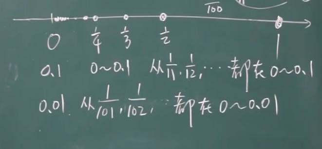
这是$\{\frac{1}{n}\}$在数轴上的表示：当N越来越大下，数代表的点越来越靠近0代表的点。
我们称数列随着$N\rightarrow\infty$下，逼近的那一个数称之为这个数列的极限。
大概如此，所以我们来看看数学分析下定义的极限：
定义：$\{x_n\}$作为一个数列，$\forall \varepsilon>0$，总$\exists{N},$当$n>N$下，$|x_n-a|<\varepsilon$
好吧，看一脸懵逼。那这个是什么意思呢？为什么引出这个抽象的定义？
注意到：$\forall \varepsilon>0$ :这个是表明任意的一个$ \varepsilon$，只要它大于0都算，都要让上面的式子成立。
这就是说，我的$ \varepsilon$可以取得任意的小，多小都得行！，而$\exists{N},$表明了存在数列的一个项：使得在之后的项（这在$n>N$已经说明白了）都与一个数a的差的绝对值（嘛，就是之后的项与这个数a的距离）为任意小。还不是相等，是一个动态的过程，因为如同
$\{\frac{1}{n}\}$中$n=10000000000000$一样，只是$x_n=\frac{1}{10000000000000}$罢了，但绝对不是0！但是，伴随这N取的越来越大，我们的{$x_n$}会越来越逼近0的。这描述的是一个动态的过程。
下面我们来引入一道经典例题：
$2,\frac{1}{2},\frac{4}{3},\frac{3}{4}…\frac{n+(-1)^{n-1}}{n}$
这个数列的极限如何？
首先分析以下大通项：$\frac{n+(-1)^{n-1}}{n}$，它可以做出分离：$1+\frac{(-1)^{n-1}}{n}$ 注意到$(-1)^{n-1}$是一个震荡的数，在-1与1之间震荡，如果看作是一个函数的话，他是有界的，而$\frac{1}{n}$或者是$-\frac{1}{n}$无论如何都会随N增大而趋向于0.那么，这个数列的极限很明了了：
那我们使用数列的极限来证明：
$证明：$
$ 因为 |x_n-1|=|\frac{(-1)^{n-1}}{n}|=\frac{1}{n}$
$于是\forall \varepsilon>0,取{N=[\frac{1}{n}]+1}, 此时|x_n-1|=|\frac{(-1)^{n-1}}{n}|=\frac{1}{n}<\varepsilon$
于是数列的极限是1.
我们再来看一个例题：
证明：$x_n=\frac{(-1)^n}{(n+1)^2}$的极限是0：
这是好说的：我们照猫画虎：
$证明：$
$ 因为：|x_n-1|=\frac{1}{(n+1)^2}<\frac{1}{n^2}$
$于是\forall \varepsilon>0，取N=[\frac{1}{\sqrt{ \varepsilon}}]+1,此时有 |x_n-1|=\frac{1}{(n+1)^2}<\frac{1}{n^2}<\varepsilon$
于是数列的极限为0.
收敛数列的性质：
我们讨论一个收敛数列，是要关注他有什么特性的：
显然：
（1）收敛数列的极限唯一。
不太好证，所以我们来引入反证法：
证明：假设$x_n\rightarrow{a}同时x_n\rightarrow{b}$ ($a\neq{b}$),我们取$\varepsilon=\frac{b-a}{2}$（1）,
$于是：\exists{N_1},当n>N_1下 |x_n-a|<\frac{b-a}{2}$（2）
同时，又有$\exists{N_2},当n>N_2下 |x_n-b|<\frac{b-a}{2}$
这个时候，我们处理一下上面的式子：（展开我们的绝对值写成不等式）
此时由（1）得到的是：$x_n<\frac{a+b}{2}$
由（2）得到的是：$x_n>\frac{a+b}{2}$
毫无疑问这是矛盾的。所以，我们的极限不可以同时趋近于两个数。
（2）收敛数列一定有界。
证明：设$\lim\limits_{n\to+\infty}{x_n}=a$，此时此刻，我们可以随意的取一个$\varepsilon=1,\exists {N},当n>N下，|x_n-a|<1$
这个时候：
$ |x_n|=|x_n-a+a|\leqslant|x_n-a|+|a|<1+|a|$
这显然符合有界的定义。但是呢？这是保证了$x>N$的形况下，这个时候，我们只需要取出$M=max\{x_1,x_2,…x_N,1+|a|\}$（取出前N个里中最大的与1+$|a|$中还要大的那个，此时，M就是$\{x_n\}$下最大的一项了），这下子：$x_n\leqslant{M}$肯定有界了
（3）收敛数列具有保号性
这是什么意思呢？就是说：如果一个数列的极限为正（为负），那么，我们的数列在某一项之后肯定都是正的（负的）
数学的表达是这样的：
$\lim\limits_{n\to+\infty}{x_n}=a$,且$a>0$，$\exists{N},$当$n>N下,x_n>0$
证明：
$a>0$时，取$\varepsilon=\frac{a}{2}>0,\exists{N},$当$n>N$下,$|x_n-a|<\frac{a}{2},$此后，我们的$0<\frac{a}{2}<x_n<\frac{3a}{2}$
证毕。
反过来讲，如果数列从一项起都大于（小于）0，并且：$\lim\limits_{n\to+\infty}{x_n}=a$，那么：$a\geqslant0(\leqslant0)$
（4）收敛数列的任意子数列都收敛于同一极限
子数列：就是从原本的数列中抽取一些元素组成一个全新的数列。
$x_{n_k}$就是一种表示。
证明:
记：$\{x_{n_k}\}$是$\{x_{n}\}$的一个子数列，并且$\lim\limits_{n\to+\infty}{x_n}=a$
则$\forall \varepsilon>0,\exists N>0,n>N下$
$|x_n-a|<\varepsilon,这时，我们取K=N,k>K时，n_k>n_K=n_N\geqslant{N}$
${|x_{n_k}-a|}<\varepsilon$
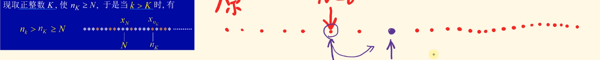
于是，我们又多了一种证明方式：如果一个数列中，存在两个子数列收敛于不同的极限，则我们说这个数列是发散。
补充：
反三角函数：三角函数的反函数时反三角函数。有如下的对应关系：
$sin(x)\rightarrow{arcsin(x)}$
$cos(x)\rightarrow{arccos(x)}$
$tan(x)\rightarrow{arctan(x)}$
实际上，就是$x=siny$的离谱写法我们看不惯，于是我们选择用一个全新的表达来表达一个全新的函数
图像上，回忆第一小节的笔记，图像关于$y=x$对称，做出来的图像就如下图所示：
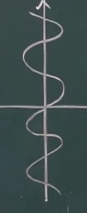
同时，为了保证是函数（还是第一小节的知识），截取我们的函数得到：
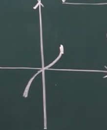
于是：$x\in[-1,1],y\in[-\frac{\pi}{2},\frac{\pi}{2}]$
一些常见的函数值对应表：
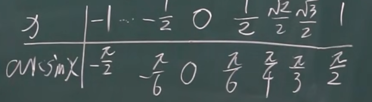
其他的：
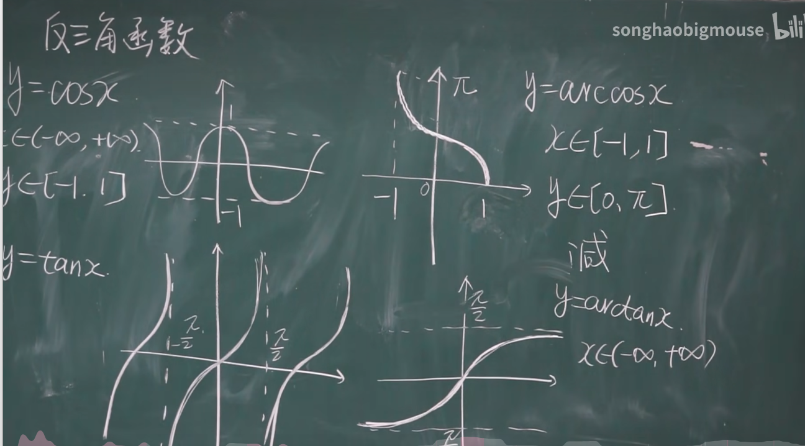
（二）函数的极限
1）$x\rightarrow{a}$下的函数极限
$f(x)$在$x_0$的去心领域内有定义，在我们的$x\rightarrow{a}$之下（这就意味着$x=a$处是可以没有定义的！！！这很重要，后面还会有其他类似的概念！！！）,当$\exists A,\forall\varepsilon>0,\exists{\delta}>0,使得在0<|x-x_0|<\delta时：|f(x)-A|<\varepsilon$.这一大长串，简记成如下：
法1）$\lim\limits_{x\rightarrow{x_0}}f(x)=A$
法2)$f(x)\rightarrow{A}(x\rightarrow{x_0})$
这定义还是很抽象：我们用人话讲：就是只要$x到{x_0}$是充分接近的，$f(x)$到$A$的距离可以为任意小。
但是，我们的${x}$可以从左右两侧逼近于${x_0}$，这就要求我们的函数必须左右两侧方式逼近同一点时，我们的函数值相同。
下面我们就使用这个定义来证明一些命题：
$(1)\lim\limits_{x\rightarrow x_0}C=C$
证明：$\forall\varepsilon>0,\exists\delta=N(N>0)$
使得$0<|x-x_0|<\delta,|f(x)-A|=0,这明显小于\varepsilon$
证毕
$(2)\lim\limits_{x\rightarrow{1}}(2x-1)=1$
证明：
$\forall\varepsilon>0,\exists\delta=\frac{\varepsilon}{2}(N>0)$
使得$0<|x-1|<\delta,|f(x)-A|=2|x-1|<\varepsilon$
$(3)\lim\limits_{x\rightarrow{1}}\frac{x^2-1}{x-1}=2$
证明：
$\forall\varepsilon>0,\exists\delta={\varepsilon}(N>0)$
使得$0<|x-1|<\delta,|f(x)-A|=|x-1|<\varepsilon$
证毕
回到我刚刚讲到的：因为我们的${x}$可以从左右两侧逼近于${x_0}$，这就要求我们的函数必须左右两侧方式逼近同一点时，我们的函数值相同。为了方便描述，我们引入左，右极限的概念来描述从左侧右侧来逼近函数一点时产生的极限
左极限:$\lim\limits_{x\rightarrow{x_0^-}}f(x)=A$
右极限:$\lim\limits_{x\rightarrow{x_0^+}}f(x)=A$
那么，回到这个定义：
$f(x)$在$x_0$的去心领域内有定义，在我们的$x\rightarrow{a}$之下（这就意味着$x=a$处是可以没有定义的！！！这很重要，后面还会有其他类似的概念！！！）,当$\exists A,\forall\varepsilon>0,\exists{\delta}>0,使得在0<|x-x_0|<\delta时：|f(x)-A|<\varepsilon$.
其中$x$怎么趋近的方式是已经确定的，于是上面的$|x-x_0|$就可以拆成$x-x_0$或者是$x_0-x$了
那么，我们再次阐述：
我们的函数必须左右两侧方式逼近同一点时，我们的函数值相同。
这个定理：$x\rightarrow{x_0}$,$f(x)$的极限存在$\Leftrightarrow$ 左右极限存在且相等
比如说
$\begin{equation}f(x)=\left\{\begin{array}{cl}x+1 & x > 0 \\0 & x = 0 \\x-1 & x < 0 \\\end{array} \right.\end{equation}$
$\lim\limits_{x\rightarrow{0^-}}f(x)=-1$
$\lim\limits_{x\rightarrow{0^+}}f(x)=1$
两者不相等，于是$f(x)$在0处的极限是不存在的。
2）$x\rightarrow{\infty}$下的函数极限
假设啊，我们的函数在无穷远处有定义的：这个时候，我们的$x$越远，我们的函数值越是接近某一个数。用数学语言表达是这样的：
$\forall{\varepsilon}>0,\exists X>0,\mbox{使得}|x|>X时，|f(x)-A|<\varepsilon$
此时，我们简记作$\lim\limits_{x\rightarrow{\infty}}=A$
例题：
$(1)\lim\limits_{x\rightarrow{\infty}}{\frac{1}{x}=0}$
证明：
$\forall{\varepsilon}>0,\exists X=\frac{1}{\varepsilon},\mbox{使得}|x|>X时，|\frac{1}{x}|<\varepsilon$
证明完毕
说完了，让我们谈谈性质
1)函数的极限唯一性
2)函数的局部有界限：$\lim\limits_{x\rightarrow{x_0}}f(x)=A,\exists{M>0},\forall{\delta>0},0<|x-x_0|<\delta时，|f(x)|\leqslant{M}$
3)局部保号性：$\lim\limits_{x\rightarrow{x_0}}f(x)=A,A>0,\exists{\delta>0}则在0<|x-x_0|<\delta,f(x)>0$
4）$Henn$定理：$\lim\limits_{x\rightarrow{x_0}}f(x)=A,\{x_n\}\rightarrow{x_0},\lim\limits_{n\rightarrow{\infty}}f(x_n)=\lim\limits_{x\rightarrow{x_0}}f(x)$
无穷小和无穷大
无穷小：趋于0的一个量（动态的！），是正是负和0都叫无穷小。同时，无穷小除了0意外，无穷小都不确定。具体的定义是这样的：
定义：$x\rightarrow{x_0}(x\rightarrow{\infty})$时，$f(x)$ 的极限为0，称$f(x)$是当$x\rightarrow{x_0}(x\rightarrow{\infty})$下的无穷小
这么说来，无穷小并不唯一，有无穷多个无穷小
下面介绍以下无穷小的一些性质:
定义$a,b$是两个无穷小
$a+b$是一个无穷小；
$a-b$是一个无穷小;
$a\times b$是一个无穷小;
$c\times{a}$是一个无穷小;
注意！！！$a\div{b}$是未定式，在没有给定a,b的具体情况，我们是不知道这个值究竟是多少的！它本身可以是任何数！！！
无穷大：这个有特定的符号：$\infty$
他也是有定义的：$\lim\limits_{ {x\rightarrow{x_0} } }f(x)= \infty$或者$\lim\limits_{ {x\rightarrow{\infty} } }f(x)=\infty$
注意！！！注意！！！无穷大可以是正无穷大或者是负无穷大！！！于是
引入两个无穷大记作$a,b$
无论是$a+b还是a-b$都是未定义的
但是$a\times{b}$一定是无穷大，$c\times{ \infty }(c\neq{ 0 })$一定是无穷大
$a\div{ b }$结果未知
定理：$f(x)$如果是无穷大，那么$\frac{1}{f(x)}$是无穷小。
$f(x)$如果是无穷小，那么$\frac{1}{f(x)}$是无穷大。（$f(x)\neq{0}$）
极限运算法则
法则1：两个甚至是若干有限个的无穷小的和是无穷小的
法则2：有界函数与无穷小的乘积是无穷小
推论：常数乘以无穷小还是无穷小
有限个无穷小的乘积还是无穷小
定理：记：$\lim{f(x)}=A,\lim{g(x)}=B$
1)$\lim{f(x)\pm{g(x)}}=A\pm{B}$
2)$\lim{f(x)\times{g(x)}}=A\times{B}$
3)$\lim{\frac{f(x)}{g(x)}}=\frac{A}{B}(B\neq{0})$
4)$\lim{cf(x)}=c\lim{f(x)}$
5)$\lim{ {f(x)}^n}=[{\lim{f(x) } }]^n$
对于数列还是一样的
定理:$\psi(x)\geqslant\varphi(x)$,$\lim{\psi(x)}>\lim{\varphi(x)}$
哎，这后面这么没有等号了呢?举个例子:$\frac{1}{x}$,$-\frac{1}{x}$
极限存在准则，两个重要极限
准则I：对于数列$\{x_n\},\{y_n\}$,${z_n}$ (1)$\exists {n_0}\in{N},y_n\leqslant{x_n}\leqslant{z_n}$(2)$\lim{y_n}=lim{z_n}=a$那么：$\lim{x_n}=a$
准则I’ :对于函数f(x),g(x),h(x),且(1)$g(x)\leqslant{f(x)}\leqslant{h(x)}$(2)$\lim{g(x)}=\lim{h(x)}=A$那么：$lim{f(x)}=A$
两个重要极限：
I:$\lim\limits_{x\rightarrow{0}}\frac{\sin{x}}{x}=1$
注意一定是$x\rightarrow{0}$！！！
同时！！！也可以有推广：
I’:$\lim\limits_{\Box\rightarrow {0}}\frac{\sin{\Box}}{\Box}=1$
其他派生的极限：
$\lim\limits_{x\rightarrow{0}}\frac{\tan(x)}{x}=1$
这是因为：$\lim\limits_{x\rightarrow{0}}\frac{\tan(x)}{x}=\lim\limits_{x\rightarrow{0}}(\frac{\sin{x}}{x})\times(\frac{1}{\cos{x}})$=1
例题：$\lim\limits_{x\rightarrow{0}}\frac{1-\cos{x}}{x^2}$
解：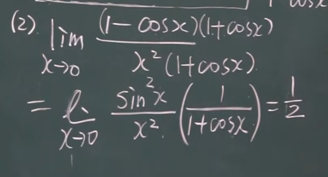
等价无穷小：（I派生）
$\sin{x}\backsim{x}$ , $\tan{x}\backsim{x}$, $\arcsin{x}\backsim{x}$
准则II：单调有界数列必有极限！
性质：收敛必有界，而有界不一定收敛
为什么有界不一定收敛呢？举个反例：$\{(-1)^{N}\}$就可以了，这个数列显然有界：
II:$\lim\limits_{x\rightarrow{\infty}}(1+\frac{1}{x})^{x}=e$
注意$x$一定是趋于无穷！！！
派生的还有。。。
II’$\lim\limits_{\Box\rightarrow{\infty}}(1+\frac{1}{\Box})^{\Box}=e$
II’’$\lim\limits_{x\rightarrow{0}}(1+{x})^\frac{1}{x}=e$
补充：Cauchy极限审敛法：
$\{x_n\}收敛\Leftrightarrow \forall{\varepsilon>0},\exists N,当m>N时，|x_n-x_m|<\varepsilon$
无穷小的比较：
不同无穷小趋于0的速度不一样，我们比较无穷小就是比较不同无穷小趋于0的速度：
方法是简单的，看他们的商的极限即可：
如：$\lim\limits_{x\rightarrow{0}}x=0,\lim\limits_{x\rightarrow{0}}\sqrt{x}=0$,而$\lim\limits_{x\rightarrow{0}}\frac{x}{\sqrt{x}}=\lim\limits_{x\rightarrow{0}}\sqrt{x}=0$
于是：我们发现这个极限为0，说明在趋近速度上$x>\sqrt{x}$
这样，我们就比较出来了
定义：
$若\lim\frac{\beta}{\alpha}=0,则称\beta是\alpha的高阶无穷小，记作\beta=o(\alpha)$
$若\lim\frac{\beta}{\alpha}=\infty,则称\beta是\alpha的低阶无穷小$
$若\lim\frac{\beta}{\alpha}=c(c\neq{0}),则称\beta是\alpha的同阶无穷小,特别的，当c=1时，又称等价无穷小,记作{\beta}\backsim{\alpha}$
$若\lim\frac{\beta}{\alpha^k}=c(c\neq{0}),则称\beta是\alpha的k阶无穷小$
下面是一些常见的等价无穷小：
1)$x\rightarrow{0}时，\sqrt[n]{1+x}-1\backsim\frac{x}{n},\sin(x)\sim{x}$
定理：
1）$\beta于\alpha等价\Leftrightarrow \beta=\alpha+o(\alpha)$
2)$\alpha\sim\widetilde{\alpha},\beta\sim\widetilde{\beta},且\lim{\frac{\widetilde{\alpha}}{\widetilde{\beta}}}是存在的，则:\lim\frac {\alpha}{\beta}=\lim{\frac{\widetilde{\alpha}}{\widetilde{\beta}}}$
于是：
2)$\tan{x}\sim{x},\arcsin{x}\sim{x}$
上面的$x$都可以被替换成$\Box$
定理：
1）两个无穷小相比的极限时，分子分母可以用等价无穷小替换
2）如果分子或分母是若干因子的乘积，则我们可以对其中一个或者几个无穷小做替换，但是因子用加减法是不可以的！！！！！！！！！！！！！！！！
函数的连续性
对于函数增量的定义：
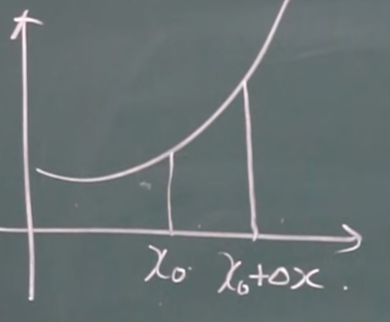
则增量$\Delta f(x)=f(x+\Delta{x})-f(x)$
实际上，叫做改变量更切合实际，因为函数也可以递减
那么，连续的定义由此引出：
若$\lim\limits_{\Delta{x}\rightarrow{0}}\Delta{y}=\lim\limits_{\Delta{x}\rightarrow{0}}(f(x_0+\Delta{x})-f(x_0))=0$时，则函数在$x_0$处连续
或者
$\lim\limits_{x\rightarrow{x_0}}f(x)=f(x_0)$时，则函数在$x_0$处连续
总结而言，一个函数若是想在$x_0$ 处有极限，且有定义，并且函数值与极限值必须相等，三个条件缺一不可！！！
既然有左右极限，于是也使得函数也有左右连续。函数的左右极限就是由$x$以不同的方向逼近产生的。
左连续：$\lim\limits_{x\rightarrow{x_0^-}}f(x)=f(x_0)$
右连续：$\lim\limits_{x\rightarrow{x_0^+}}f(x)=f(x_0)$
类似的：函数的连续的充要条件是函数即左连续又右连续。
间断点
回到连续需要满足的条件：
一个函数若是想在x_0 处有极限，且有定义，并且函数值与极限值必须相等，三个条件缺一不可！！！于是，间断点也就有三种产生原因：
1)在$x_0$无定义
2)$\lim\limits_{x\rightarrow{x_0}}f(x)$不存在
3）$\lim\limits_{x\rightarrow{x_0}}f(x)\neq{f(x_0)}$
举例子：
1)$y=\tan{x}在x=\frac{\pi}{2}$处无定义，所以在这一点上不连续这是可去间断点.
2)$y=\sin{\frac{1}{x}}$在x=0处极限不存在，所以在这一点上不连续.
3）
，这个函数在x=1处不连续。这个间断点叫跳跃间断点
间断点有两类：
第一类：左右极限都存在
有可去间断点，跳跃间断点
第二类：左右极限不都存在
有震荡间断点
连续函数的性质：
对于$[a,b]$上，且$f(a)f(b)<0$时，则其中至少存在一个点$\xi \in[a,b]，$使得$f(\xi)=0$
推广：
定理：$f(x)在[a,b]$上连续,$f(a)=A,f(b)=B$,则$\exists C\in[A ,B]$,至少有一个$\xi \in [a,b]$使得，$f(\xi)=C$
一.基本定义和性质
导数的定义
恭喜！你来到了导数这一章！现在，我们可以使用它来更精确的描述函数是怎么增长变动的！！！
首先，引入一个场景：讨论速度与位移，并且我们都用时间来表示：
那么，一个平均速度可以用如下这个式子来表达：$v=\frac{f(t)-f(t_0)}{t-t_0}$
这是我们中学就已经熟知的。
现在，让我们让$t\rightarrow{t_0}$ 也就是让t逼近$t_0$。这样，回到高中物理，我们就知道我们得到了瞬时速度。
其实，很多函数变化，都可以类比的使用这种办法得到函数在一个点的变化情况，下面，让我们统一一下，使用一个定义来综述：
$定义 y=f(x)在x_0的领域内有定义，对x_0取增量\Delta{x}，那么函数的增量就是\Delta{y}=f(x_0+\Delta{x})-f(x_0)，如果\lim\limits_{\Delta{x}\rightarrow{0}}\frac{\Delta{y}}{\Delta{x}}=\lim\limits_{\Delta{x}\rightarrow{0}}\frac{f(x_0+\Delta{x})-f(x_0)}{\Delta{x}}$ $是存在的，我们就称呼y=f(x)在x_0处可导，且这个极限值就是y=f(x)在x_0处的导数$
记作$y’| _{x=x_0},f’(x_0),\frac{dy}{dx}|_{x=x_0}，\frac{df(x)}{dx}|_{x=x_0}$上面四个选一个
当然，导数还有另一个定义：就是
$如果\lim\limits_{x\rightarrow{x_0}}\frac{\Delta{y}}{\Delta{x}}=\lim\limits_{x\rightarrow{x_0}}\frac{f(x)-f(x_0)}{x-x_0}是存在的，我们就称呼y=f(x)在x_0处可导，且这个极限值就是y=f(x)在x_0处的导数$
如果函数在一个区间内处处可导，我们就可以再用一个函数刻画导数：导函数$f’(x)$
下面来看一些函数的导（函）数（方便起见使用h代替$\Delta{x}$）
（1）$f(x)=C$
则：$\lim\limits_{h\rightarrow{0}}\frac{f(x+h)-f(x)}{h}=0$
故$C’=0$
(2)$f(x)=x^n$
1.当n=1时:$\lim\limits_{h\rightarrow{0}}\frac{f(x+h)-f(x)}{h}=1$
2.当n>1时：$\lim\limits_{h\rightarrow{0}}\frac{f(x+h)-f(x)}{h}=\lim\limits_{h\rightarrow{0}}\frac{(x+h)^n-x^n}{h}$
而：$(x+y)^n=x^n+nx^{n-1}y+\frac{n(n-1)}{2}x^{n-2}y^{2}+…+ny^{n-1}x+y^n$
于是$极限=\lim\limits_{h\rightarrow{0}}nx^{n-1}+(…)\times{h}=nx^{n-1}$
3.当$f(x)=x^{\mu},\mu\in{R}，(x\neq{0})$
于是：
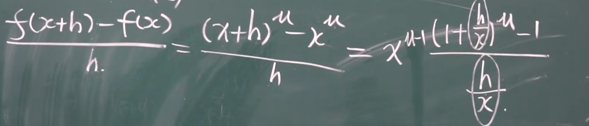
$(x^\mu)’=\mu{x^{\mu-1}}$
4.$f(x)=\sin{x}$
$\lim\limits_{h\rightarrow{0}}\frac{f(x+h)-f(x)}{h}=\lim\limits_{h\rightarrow{0}}\frac{\sin{(x+h)}-\sin{x}}{h}=\lim\limits_{h\rightarrow{0}}\frac{\cos(x+\frac{h}{2})\times{\sin{\frac{h}{2}}}}{\frac{h}{2}}=\cos{x}$
所以：$\sin’{x}=\cos{x}$
类似的$\cos’{x}=-\sin{x}$
5.$(a^x)’=a^x\ln{a},特别的(e^x)’=e^x$
6.$\log’_{a}{x}=\frac{1}{x\ln{a}},特别的\ln’x=\frac{1}{x}$
单侧导数
导数也有单侧导数的这一概念，直观的讲，正是导数以不同的方式逼近一个点所产生的：
回忆我们先前的类似概念，左侧导数的定义是这样的：
更容易理解的：右导数的定义是这样的：
当然，也有第二定义
左导数：
$$ f'_{-}(x_0)=\lim \limits_{ { x } \rightarrow{x_0^-} } \frac{f(x_0+h)-f(x_0)} {h} $$ 右导数：
于是，可导的一种判断方式有了：在一个点的左右导数存在相等。
对于$y=|x|$ ，在$x_0$左侧的左导数为-1，右导数为1，这两个不相等，故$|x|$在$x=0$处不存在导数。
导数也有几何意义
导数也有几何意义，不错。那么，导数的几何意义是什么呢？直接说：导数的几何意义就是函数图像在某一点上的切线的斜率，一个处处可导的曲线必然光滑。
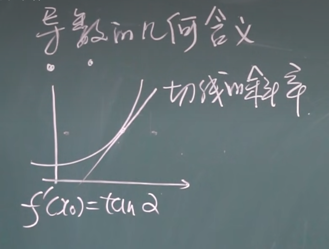
于是，切线方程可以这样给出
有切线了，法线也会有：法线就是过切点的，垂直于切线的线：
比如说，让我们求$y=\frac{1}{x}$在$(\frac{1}{2},2)$上的切线：
联系起来：探寻可导与连续的关系
我们可以简单的理解认为可导就说明函数曲线的光滑，连续就是函数图像不产生间断。看来：函数如果光滑，则一定没有间断，函数没有间断却不一定光滑。那我们认为：可导必然连续，连续不一定可导。
对于这件事情：可以想象一排自行车：如果他们想多米诺骨牌一样倒下了 （可 倒（导））说明他们一定连续的放置，反之，如果不去动他们，则他们就算连续放置也不会倒下，可以这样记。
回到数学的定义上，我们对比一下：
于是，如果一个$\Delta{x}\rightarrow{0}$，同时，可导定义比出来的比值还必须是一个常数，由同阶无穷小的定义，我们不得不得出$\lim\limits_{\Delta{x}\rightarrow{0}}\Delta{y}=0$的结论，也就是连续。
反之，我们的$\Delta{y}$可能并不会与$\Delta{x}$属于同阶无穷小，因此，我们的可导定义极限可能发散。于是：就可能并不可导
求导法则：和差商积
高中我们就接触过了：
首先定义$u,v$是两个可导函数，其值为$u’,v’$
法则1234都可以扩展：
对于有限个$u_i$的可导函数：他们的和的导数为各自导数的和
对于有限个$u_i$的可导函数：他们的积的导数为所有$u_i$的积中轮流取出一个$u_k(k\in{(1,i)})$求一次导
反函数的求导法则
反函数也能求导。
超前一点，可以引入记号$\frac{dy}{dx}$表达$f(x)$的导数，而$\frac{dx}{dy}$就是反函数，于是：
他让我们的导数公式可以扩充了：
例如:$x=\sin{y}$作为$y=\sin{x}$的反函数的公式
于是：$y=\arcsin{x}$的导数公式正是：$\arcsin{x}’=\frac{1}{\sqrt{1-x^2}}$.
这样，我们也还可以求出其他公式：
复合函数的求导法则
下面，我们先从严肃的讲起：
假设，我说假设：$f(x)$是一个很复杂的东西：但好消息是，可以是做若干函数的嵌套：比如说$\ln{\sqrt{\frac{1}{cos{\ln{\sin^2{x}}}}}{sin{x}}}$云者，那这样的函数这么求导呢？复合求导法来力！
就是说，我们可以视$u$作一个整体，先想象成单一函数$f(x)$求导，不过$x$是$u$,随后对$u$求导，乘起来的时候u要换成x.
使用微分语言是这样描述的：
想象成分式乘法，我们自然可以：
例如说：对$e^{x^{3}}$求导
我们首先设$u=x^3$，而$e^u$对$u$求导显然是$e^u$，那么$u$对$x$是$3x^2$根据法则，我们要把连着直接相乘$3e^u{x^2}$，但是还没换回来$x$,因此将$u=x^3$换回来得到结果$3e^{x^3}{x^2}$
那么：$y=\ln{\cos{e^x}}$如何？
直接设置$y=\ln{u},u=\cos{v},v=e^x$结合复合函数求导法则。
$y’=\frac{1}{u}\times{-\sin{v}}\times{e^x}$
换元：$y’=\frac{-\sin{e^x}\times{e^x}}{\cos{e^x}}$
导数公式表
介绍完导数的求导法则，我们也就可以引入一系列的求导表了：
高阶导数
就是对一个函数求有限次导数：比如说
在微分学里也有专门的符号表示
一些常见的N阶导数公式是如下的：
一些法则也是成立的：
但是乘法不是，是莱布尼兹公式：
隐函数求导
我们现在接触的函数都是显函数，$y$与$x$都是显然分离的，比如说$y=\sin{x}$云者，有一些函数是$x$和$y$混在一起的，比如说如下的几个式子
$ e^{xy}+\sin{y^2}+x^3+8=0$
$e^y-xy-e=0$
云者。这些被称为隐函数，或者说：关于x的一个方程。
下面，我们介绍这样函数的求导方式：
我们假设$y=y(x)$是一个x的函数，于是，这样的方程成为了一个恒等式：一个关于x的一个大函数$F(x,f(x))=0$的式子。，现在我们求导，就是使用求导法则运算解决问题：右侧作为常数，导数恒为0，对左侧求导即可。下面对：
$e^y-xy-e=0$
求导
左侧：$e^y\cdot{y’}+y+xy’$
右侧：0
现在参数分离：$y’=-\frac{y}{e^y+x}$
$y^5+2y-x-3x^7=0$
求导：
左侧：$5y^4y’+2y’-1-21x^6=0$
右侧：0
现在参数分离：$y’=\frac{1+21x^6}{5y^4+2}$
参数方程求导
我们说一些函数可以用
表示，这个时候，可以使用微分形式的公式更好的表达求导：
微分可以视作增量的一种表达：
回顾增量公式$\Delta{y}=f(x_0+\Delta{x})-f(x_0)$,我们常常发现以这种形式表达的$\Delta{y}$经常可以被写成$A\Delta{x}+o(\Delta{x})$的形式，注意到$A$与$\Delta{x}$是无关的。如果函数的增量可以这样表达：
$A$与$\Delta{x}$是无关,
那么，我们就改写成这样的形式：
同时，我们还说这样的函数在这一点是可微的：并且，可微一定可导，可导也一定可微：事实上，以此为基准
微分与导数就是变化率问题的等价表达
于是任何微分公式都可以由上述公式给出：
比如说：$y=x^2,dy=2xdx$
微分在近似计算的应用
回到上面讲的公式：
这个公式，我们可以对一个已知临近量的函数值求另一点相近的函数值的近似值，我们对公式移项：
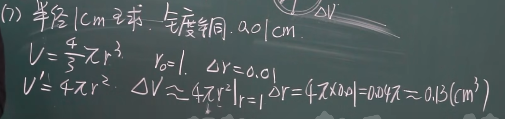
二.导数的应用
Rolle（罗尔）定理
事实上，为了更好的证明罗尔定理，一般我们需要严格的引入费马定理：
费马定理
$f(x)$在$x_0$及其领域有定义，且在$x_0$处可导，如果$f(x)\leqslant{f(x_0)}$(或者$f(x)\geqslant{f(x_0)}$)
则$\forall{x}\in \cup(x_0)$(这表示领域)，$f’(x_0)=0$
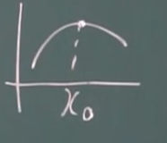
看起来容易，怎么证明？我们不妨从$x_0$可导入手：
证明：以$f(x_0)$是最大值为例：函数$f(x)$在$x_0$处可导，那就要求：
同时注意到$x_0+\Delta{x}$也是在$\cup(x_0)$上的，于是也有：
同时函数$f(x)$在$x_0$处可导：
上面的三个式子联立：得到$f’_{-}(x_0)=f’_{+}(x_0)=f’(x_0)=0$
证毕。
于是：又把导数为0的点成为驻点，因为函数在这一点停靠在$y=f(x_0)$上不变化，他们是可能的极值点（会在后面阐述为什么是可能）
罗尔定理
首先函数$f(x)$满足
1）在$[a,b]$上连续 2)在$(a,b)$上可导 3）$f(a)=f(b)$
则至少存在一点$\xi\in(a,b),f’(\xi)=0$
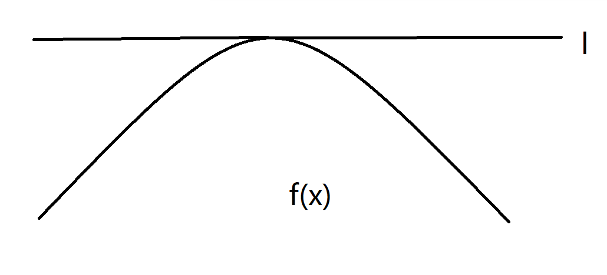
这个定理说明了在端点值相等的区间里函数必有至少一个驻点。
拉格朗日中值定理
要求：1)$[a,b]$连续 2)$(a,b)$可导：
则函数$f(x)$在$(a,b)$上至少有一个点$\xi$,使得下面的式子成立：
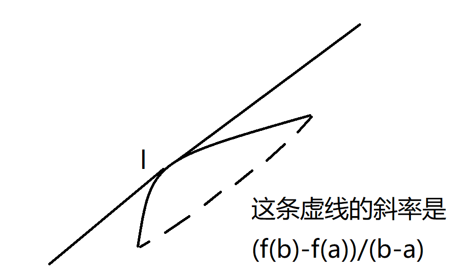
说白了，就是罗尔定理的扩展，我们链接两个端点，产生的直线称为函数的一条弦在函数上我们至少可以找到一个点的切线斜率等于这条线的斜率的大小。
柯西中值定理
如果$f(x)$和$F(x)$满足：
1）$[a,b]$连续 2)$(a,b)$可导 3）$\forall{x}\in(a,b),F’(x)\neq{0}$
则至少有一个点$\xi$,使得$\frac{f(b)-f(a)}{F(b)-F(a)}=\frac{f’(\xi)}{F’(\xi)}$
这又是拉格朗日中值定理的推广。
洛必达法则
这玩意干嘛的？求解未定式$\frac{0}{0}$,$\frac{\infty}{\infty}$的式子
注意：法则内容如下：
1）两个函数$f(x),F(x)$在$x\rightarrow a$都同时倾向于$0$或者$\infty$
2）在$a$的去心领域内$f’(x),F’(x)$都存在且$F’(x)\neq 0$
3）$\lim\limits_{x\rightarrow a}\frac{f’(x)}{F’(x)}$存在（或者无穷大）
则$\lim\limits_{x\rightarrow a}\frac{f(x)}{F(x)}=\lim\limits_{x\rightarrow a}\frac{f(x)}{F(x)}$
例子：
注意：如果使用完一次洛必达后的式子仍满足洛必达的条件可以继续使用
比如说
到这里就不能再使用洛必达法则了：因为$\lim\limits_{x\rightarrow 1}\frac{6x}{6x-2}$不满足条件1)，所以：直接带值得到$\frac{3}{2}$结束
注意，我们可以使用这个法则分析一些常见函数的发散速度：
命题：比较$\ln x,x^n,e^{\lambda{x}}$的发散速度
比较$\ln x,x^n$
这意味这$\ln{x}$的发散速度小于$x^n$的发散速度。
比较$x^n，e^{\lambda{x}}$
这意味这$x^n$的发散速度小于$e^{\lambda{x}}$的发散速度。
泰勒公式
泰勒公式是用若干多项式近似描述函数的一个公式：
这样一个过程。$R(x)$是高于n阶的一个误差数。
我们求$x_0$一阶导数得到：$f’(x_0)=a_1$
类似的$f’’(x_0)=1\cdot 2a_2$
$f’’’(x_0)=1\cdot 2 \cdot 3a_3$
…
$f^{(n)}(x)=n!a_n$
这样多项式的系数就确定了！替换一下：
其中$R_n(x)=o(x-x_0)^n$当然，由拉格朗日中值定理，$R_n(x)$也可以这样表达：
当然还有更紧凑的形式：
我们使用泰勒公式看看一些函数的近似,为了简便，我们自然取$x_0=0$
函数的单调性
现在，我们可以系统的分析函数的单调性了：
函数的单调性分为单调递增和单调递减：( x 在区间 I ,且函数连续)
于是下面给出定理：
同理：单调递减的也是类似的
函数的单调性与一阶导数息息相关，看一些例题
因为：
故函数总在$[-\pi,\pi]$单调递增。
这样的一些点是我们在求解一阶导数的时候需要注意的：
1）$f’(x)=0$ 的点：又叫驻点。
2)导数不存在的点
例题：
函数的凹凸性
我们还要关注函数是怎样的单调递增或者单调递减，这就需要我们使用二阶导数分析函数的凹凸性。
首先我们来看定义：
仍对于$f(x)$在区间$I$上连续，如果对任意的$x_1,x_2 \in I (x_1\neq{x_2})$
我们就称呼$f(x)$在区间$I$上的图像是凹的（上凹）
类比的：如果：
那么我们又称呼$f(x)$在区间I上的图像是凸的（下凹的）
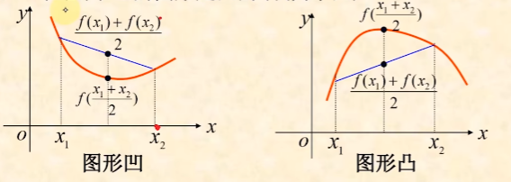
函数$f(x)$如果在$I$上是凹（凸）的，那么$-f(x)$是凸(凹)的。
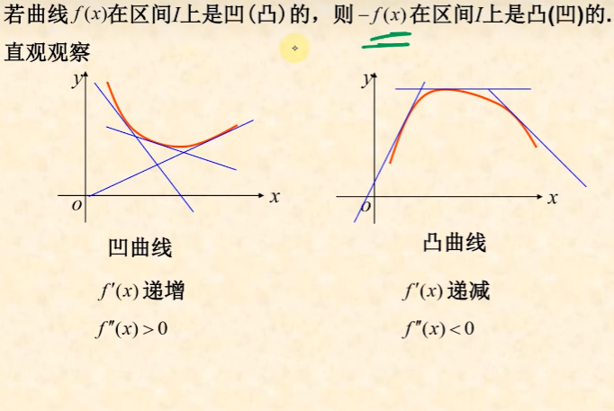
我们先前就提到过：函数的凸凹性和函数的二阶导数密切相关，下面我们来一睹定理的芳容：
设$f(x)$在区间$I$上二阶可导，那么：
（1）若在$I$上$f’’(x)>0$，那么我们说函数是凹的
（2）若在$I$上$f’’(x)<0$，那么我们说函数是凹的
极值及其求法
首先我们需要区分一下极值和最值：
极值：邻域内函数的最大最小值
最值：在全函数的定义域内函数的最大最小值
下面给出严肃的定义：
定义：$f(x)$在$x_0$的领域$\cup (x_0)$下有定义且连续,$\forall{x}\in\mathring{U}(x_0)$,$f(x)
极值的定理 I:(必要条件)函数可导，且在此点$x_0$的导数 $f’(x_0)=0$
极值的定理 II:(第一充分条件)：$f(x)$在$x_0$处连续,且在$\mathring{U}(x_0)$处可导
（1）$x \in(x_0-\delta,x_0)$ 且$f’(x)>0$,而$x \in(x_0,x_0+\delta)$ 且$f’(x)<0$我们说函数在此点取上极大值
（2）$x \in(x_0-\delta,x_0)$ 且$f’(x)<0$,而$x \in(x_0,x_0+\delta)$ 且$f’(x)>0$我们说函数在此点取上极小值
如果不变号，那就不是极值点。
下面总结流程：
（1）求$f’(x)$
（2）求驻点和不可导点
（3）考察上面这些点的变号情况
例题：$f(x)=(x-4)\sqrt[3]{(x+1)^2}$的极值点.
$f’(x)=\frac{5(x-1)}{3\sqrt[3]{x+1}}$令$f’(x)=0$
得到 $x=1$是驻点，$x=-1$是不可导点
1)$x=-1$,$x<-1$时，$f’(x)>0$, $x>-1$时，$f’(x)<0$,所以这是一个极大值点
2）$x=1$,$x<1$时，$f'(x)<0$, $x>-1$时，$f'(x)>0$,所以这是一个极小值点
当然还有别的判断方式：
定理 II’（第二充分条件）函数$f(x)$二阶可导，$f’(x_0)=0,f’’(x_0)\neq{0}$
当：
1)$f’’(x)<0$在$x_0$处取极大值
2)$f’’(x)>0$,在$x_0$处极小值
函数图像的绘制
下面我们开始绘制函数的图像！这也是系统分析函数的步骤
1）分析函数的定义域，以及可能的奇偶性，周期性
2)求出一阶导数，二阶导数，和他们等于0的点
3)找出函数的间断点（从定义域得到），以及一阶导数，二阶导数不存在的点
4）由此求出函数的单调性凹凸性
5）看看是否有渐近线（铅锤，水平，斜的渐近线）
6）确定极值（带点）
例如：$y=x^3-x^2-x+1$
显然函数的定义域为$R$，且无奇偶性，周期性
$f’(x)=3x^2-2x-1,f’’(x)=2(3x-1)$
令$f’(x)=0,x=-\frac{1}{3}或x=1$,当$f’’(x)=0,x=\frac{1}{3}$
确定函数的分间断是：$(-\infty,-\frac{1}{3}),[-\frac{1}{3},\frac{1}{3}],[\frac{1}{3},1],[1,+\infty]$
并且列表时按照如下格式列
![image-20230107161122390]image-20230107161122390.png)
补充：函数的渐近线是如下公式确定的：
至于水平渐近线就是$\lim\limits_{x\rightarrow{\infty}}(f(x)-b)=0$那么就是$y=b$
铅锤渐近线:$\lim\limits_{x\rightarrow{a}}f(x)\rightarrow\infty$则就是$x=a$
曲率分析：
我们使用曲率来分析曲线的弯曲程度：
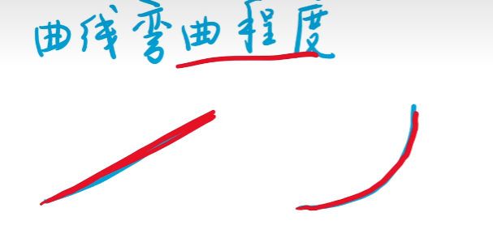
这样看
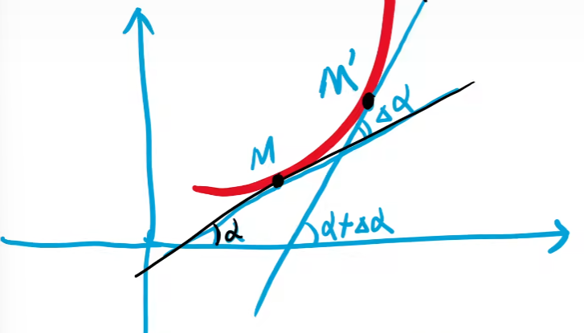
可以看到，如果$M$移动相同单位，其倾角变化越大，那就称之曲率越大：
如果我们让图片里的$M,M’$靠拢，不久类比的得到一个点的曲率了吗 ？（ds是弧微分，后面有图片展示）
这样：直线的曲率:$K=0$
圆的曲率:$K=\frac{1}{r}$（ r 是圆的半径）
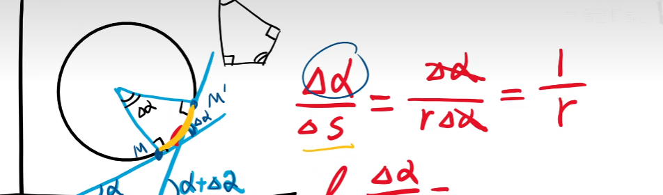
曲率的公式在直角坐标系的公式可以从定义得到:
$y’=\tan{\alpha}$,$y’’=\sec^2{\alpha}$,于是:
而$ds=$$\sqrt{1+y’^2}$
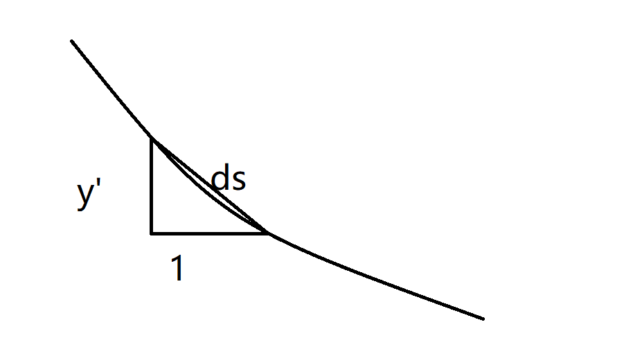
弧微分
于是：
类比的，在参数方程下：
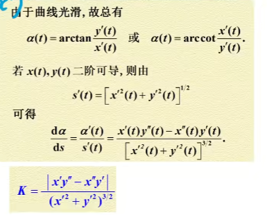
这一章内容通俗的说：就是求导的反向操作：我们需要求出谁求导的到现在的东西
定义
假设一个函数$f(x)$是一个函数$F(x)$求导的结果，那么称$F(x)$是$f(x)$的一个愿函数
这是因为$F(x)+C$(C是一个常数)求导也是$f(x)$
原函数存在定理：连续的函数一定有原函数
说了这么多，我们又该怎么表示一个函数的原函数呢
比如说：$\int x^2dx=\frac{x^3}{3}+C$
但是注意：这个容易错：$\int \frac{1}{x}dx=\ln{|x|}+C$
因为（x<0）下$\ln{x}$无定义，可以把$\frac{-1}{-x}$看，这样就好了。
下面来看一些式子：
说明了积分号在内微分号在外的式子，没有常数C（本质是$df(x)=f’(x)dx$）
说明了积分号在外微分号在内的式子，有常数C（本质是$\int f(x)dx=F(x)+C$）
积分表
幂函数的积分
常数的不定积分：
不定积分的性质
1）$\int [f(x)\pm g(x)]dx=\int f(x)dx \pm \int g(x)dx$
2)$\int kf(x)dx=k\int f(x)dx$
第一类换元积分（凑微分法）
首先回到这里：$\int 1 dF(u)=F(u)+C$,现在假设$u=\varphi (x)$,这样，我们就有$\int 1dF(\varphi(x))=F(\varphi(x))+C$,进一步的：$\int f(\varphi(x))\varphi ‘(x)dx=F(\varphi(x))+C$
说白了，就是复合求导的逆过程，我们的核心过程就是通过合并至d后面从而化简函数：
1）$\int 2\cos 2xdx$
解：$\int \cos 2xd(2x)=sin(2x)+C$
2)$\int \frac{1}{3+2x}dx$
解：$\int \frac{1}{2}\frac{1}{3+2x}d(2x+3)=\frac{1}{2}\ln|(2x+3)|+C$
3)$\int 2x e^{x^2}dx$
解：$\int e^{x^2}dx^2= e^{x^2}+C$
4)$\int x\sqrt{1-x^2}dx$
解：$-\frac{1}{2}\int \sqrt{1-x^2}d(1-x^2)=-\frac{1}{3}(1-x^2)^{1.5}+C$
5)$\int \frac{x^2}{(x+2)^3}dx$
解:
$令:x+2=u$,$\int \frac{(u-2)^2}{u^3}du=\int (\frac{1}{u}-\frac{4}{u^2}+\frac{4}{u^3})du=\ln |u|+\frac{4}{u}-2\frac{1}{u^2}$
于是:$\ln |x+2|+\frac{4}{x+2}-2\frac{1}{(x+2)^2}$
6)$\int \frac{1}{a^2+x^2}dx(a\neq 0)$
解：$=\frac{1}{a}\int \frac{1}{1+(\frac{x}{a})^2}d(\frac{x}{a})=\frac{1}{a}\arctan \frac{x}{a}+C$
7)$\int \frac{dx}{\sqrt{a^2-x^2}}$
解：$\frac{1}{a}\int \frac{dx}{\sqrt{1-(\frac{x}{a})^2}}=\arcsin \frac{x}{a}+C$
8)$\int \frac{dx}{x^2-a^2}$
解：$\frac{1}{2a}\int (\frac{1}{x-a}-\frac{1}{x+a})dx=\frac{1}{2a}\ln|\frac{x-a}{x+a}|+C$
9)$\int \frac{dx}{x(1+2\ln x)}$
解：$\int \frac{d\ln{x}}{1+2\ln x}=\frac{1}{2}\ln|1+2\ln x|+C$
10）$\int \frac{e^{3\sqrt{x}}}{\sqrt{x}}dx$
解：$=2\int e^{3\sqrt{x}}d{\sqrt{x}}=\frac{2}{3}e^{3\sqrt{x}}+C$
11)$\int \sin^3xdx$
解：$\int sin^2xd\cos x=\int (1-cos^2x)d\cos x=-\cos x-\frac{1}{3}\cos^3x+C$
12)$\int \sin^2x\cos^5xdx$
解：$\int \sin^2\cos^4xd\sin x=\int \sin^2x(1-\sin^2x)^2d\sin x=\frac{\sin^3x}{3}-\frac{2\sin^5x}{5}+\frac{\sin^7x}{7}+C$
13)$\int \tan xdx$
解：
$\int \frac{\sin x}{\cos x}dx=-\int \frac{1}{\cos x}d\cos x=-\ln|cos(x)|+C$
14)$\int \cos^2xdx$
解：$\int \frac{1+\cos2x}{2}dx=\frac{x}{2}+\frac{\sin 2x}{4}+C$
15)$\int \sin^2x\cos^4xdx$
解：$\int \frac{1-\cos{2x}}{2}(\frac{1+\cos{2x}}{2})^2dx=\frac{1}{8}(x+\frac{1}{2}\sin 2x-\frac{1}{2}x-\frac{1}{8}\sin 4x-\frac{1}{2}(\sin 2x-\frac{sin^3 2x}{3}))+C$
16)$\int \sec^6xdx$
解：$\int \sec^4xd\tan x=\int (\tan^2x+1)^2d\tan x=\frac{\tan^5x}{5}+\frac{2\tan^3x}{3}+\tan x+C$
17)$\int \csc xdx$
解：$\int \frac{1}{\sin x}dx=\frac{\cos \frac{x}{2}dx}{2\sin \frac{x}{2}\cos^2\frac{x}{2}}=\int \frac{\sec^2\frac{x}{2}}{\tan\frac{x}{2}}d(\frac{x}{2})=\int \frac{d\tan\frac{x}{2}}{\tan \frac{x}{2}}=\ln|\tan \frac{x}{2}|+C$
总结下：三角函数者：奇次提，偶次被倍角公式替换
第二类换元积分
我们把d()内的东西往外提，化而言之：就是换元$x=\varphi(t)$再求积分：
$\int f(x)dx=\int f(\varphi(t))\varphi’(t)dt$
1)$\int \sqrt{a^2-x^2}dx(a>0)$
解:令：$x=a\sin t,t\in(-\frac{\pi}{2},\frac{\pi}{2})$
故：$\int \sqrt{a^2-x^2}dx=a\cos tdx$
$dx=a\cos t$
因此：$\int a^2\cos^2tdt=a^2(\frac{t}{2}+\frac{\sin2t}{4})+C=a^2t+a^2\frac{\sin t\cos t}{2}+C$
又$\sin t=\frac{x}{a},\cos t=\frac{\sqrt{a^2-x^2}}{a}$
这样：$\frac{a^2}{2}\arcsin\frac{x}{a}+\frac{x}{2}\sqrt{a^2-x^2}+C$
2)$\int \frac{dx}{\sqrt{x^2+a^2}}(a>0)$
现令：$x=a\tan t$
则：$\int \frac{dx}{a\sec x}$
又：$dx=a\sec^2 tdt$
那么：$\int \sec tdt=\ln|\sec t+\tan t|+C$
我们可以使用三角形法来看：
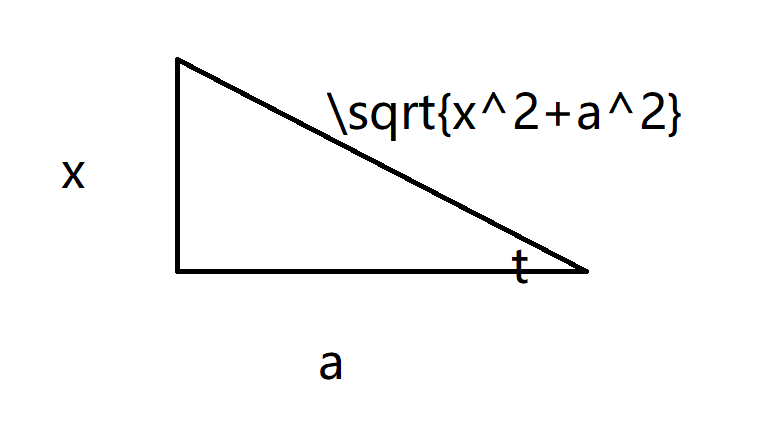
这下，我们找到了：$\tan t=\frac{x}{a},\sec t= \frac{\sqrt{x^2+a^2}}{a}$
于是：$=\ln|\frac{\sqrt{x^2+a^2}}{a}+\frac{x}{a}|+C=\ln(\sqrt{x^2+a^2}+x)+C’$
3)$\int \frac{dx}{\sqrt{x^2-a^2}}$
解：
令：$x=a\sec t,则：\int \frac{dx}{a\tan t}$
$dx=a\sec t\tan tdt$
于是：$\int \sec tdt=\ln(x+\sqrt{x^2-a^2})+C$
小总结：
$\sqrt{a^2-x^2}\longrightarrow x=a\sin t,|a\cos t|$
$\sqrt{x^2-a^2}\longrightarrow x=a\sec t,|a\tan t|$
$\sqrt{a^2+x^2}\longrightarrow x=a\tan t,|a\sec t|$
4)$\int \frac{\sqrt{a^2-x^2}}{x^4}dx$
解：令：$x=\frac{1}{t}$得：
$dx=-\frac{1}{t^2}dt,-\int (a^2t^2-1)^{0.5}|t|dt$
由此：$x>0下 ,=-\frac{(a^2-x^2)^{1.5}}{2a^2x^3}+C$
或者使用三角函数也可以：
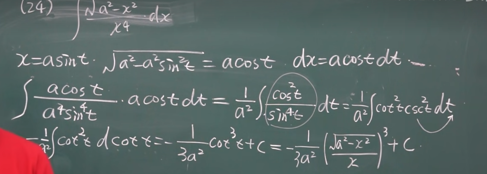
分部积分法
我们来看：$\int udv=uv-\int vdu$
我们就可以化简积分了：如：
1)$\int xe^xdx=\int xde^x=xe^x-e^x=(x-1)e^x+C$
有的时候，我们可以尝试的去试试看谁做微分是简单的
往往$e^x$要放到微分里。
2)$\int x\cos xdx=\int xd\sin x=x\sin x-\int \sin xdx=x\sin x+\cos x+C$
往往三角函数要放到微分里。
那这样呢：
$\int \sin x e^xdx$
注意：$=\sin xe^x-\int e^x\cos xdx=\sin x e^x-\cos xe^x-\int \sin x e^xdx$
居然出现了我们要求的东西：
于是：$\int \sin x e^xdx=\frac{1}{2}(\sin x e^x-\cos xe^x)$
3)$\int \arccos xdx=x\arccos x-\frac{1}{2}\int \frac{d(1-x^2)}{\sqrt{1-x^2}}=x\arccos x-\sqrt{1-x^2}+C$
有理函数
这是针对$\frac{P(x)}{Q(x)}$的有理分式的积分方法：我们主要是添项拆项从而分离成若干简单分式的和差，从而方便我们的积分
1）P(x)的阶高于Q(x)
我们分离常数使之所有的子分式的分母阶比分子高：
2）P(x)的阶低于Q(x)
i.分母一阶的，直接$\ln$
ii.分母二阶的：
可以因式分解的：分解因式化简
不可以因式分解的：配方后变成$(ax+b)^2+C$的$\arctan$类型积分
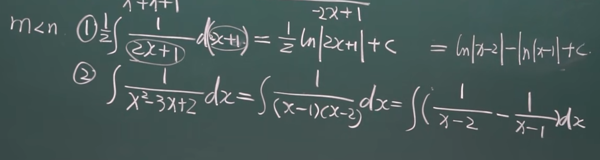
iii.分子分母差一次、
把分子扔进d里面升次
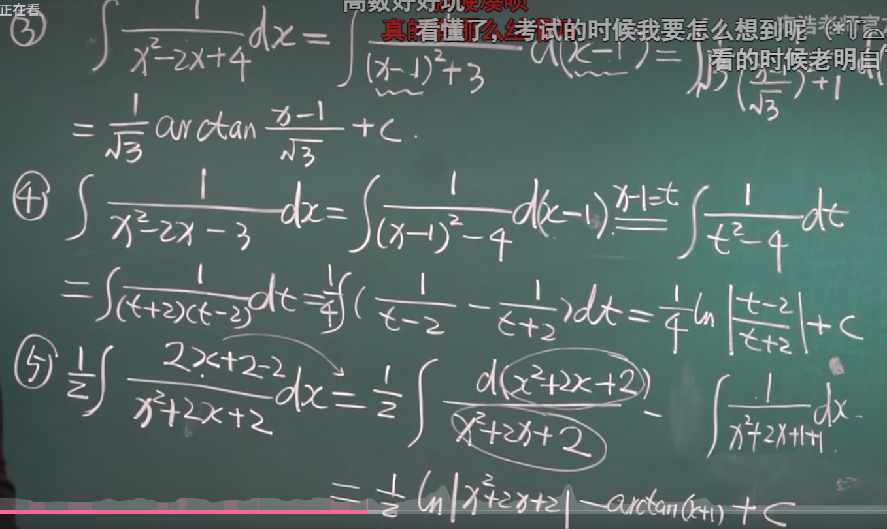
iv.一般的
我们假设一个式子可以分解成若干的分式和，其分式的特点是：分子比分母底一阶，分子假设为全项的多项式：
如
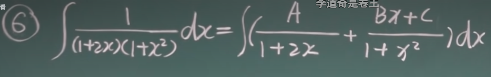
根式：
令t为根式，换元即可
概念
定积分是从求解曲边梯形的面积产生的：就是说求解类似于如下的图像的面积
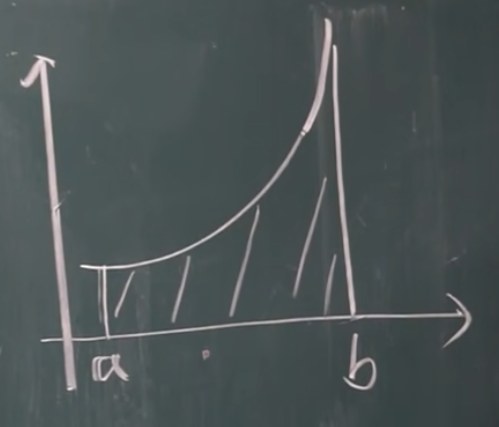
怎么搞？我们试想一下，使用如下的方式：通过把面积切成很小的小块：
由于这些面积可以近似成矩形甚至是梯形，我们可以用面积和近似代替曲边梯形的面积。
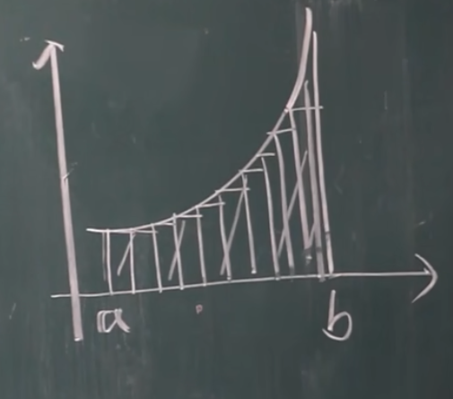
数学上是这么
产生了
只要切的够小，我们就可以:$S\approx \sum_{k=1}^n \Delta x_kf(\sigma_k)$
其中$\sigma_k$是小区间上的一个任意点。怎么逼近真实值呢？让点取的密集一些：就是令$\lambda \rightarrow 0$就好了：产生的极限就是面积。
我们可以引入定积分了：
定义：$f(x)$在[a,b]有界，在[a,b]上任意插入若干个分点（随便插入），产生N个小区间，其长度为:$x_k(0<k\leq n)$,又在区间上任意取一点$\sigma_i$，现在取出这些区间内最大长度的长度值记成$\lambda$,也就是$\lambda=max\{\Delta x_1,\Delta x_2,…\Delta x_n\}$。这下有了假设和的极限：$\lim\limits_{\lambda \rightarrow 0} \sum_{k=1}^n \Delta x_kf(\sigma_k)$ 假设他存在：就引入这样的记号：
其中a,b叫积分下限和积分上限，被积函数是f(x),积分区间是[a,b],积分变量是x
注意，这个值（或者说这个定积分）与积分变量无关，也就是说：
定理1：函数只要连续就一定可积。
定理2：函数有界且有有限个间断点也可积。
定积分的几何意义
1.$f(x)\geq0$
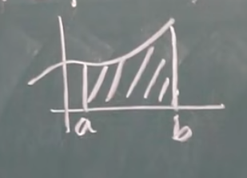
就是阴影部分面积
2.$f(x)\leq0$
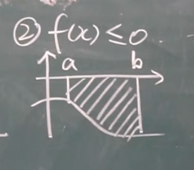
注意是阴影部分面积的相反数，这是因为：
中：$f(\sigma_k)<0$
矩阵法
我们使用切分成矩阵的方式来计算定积分
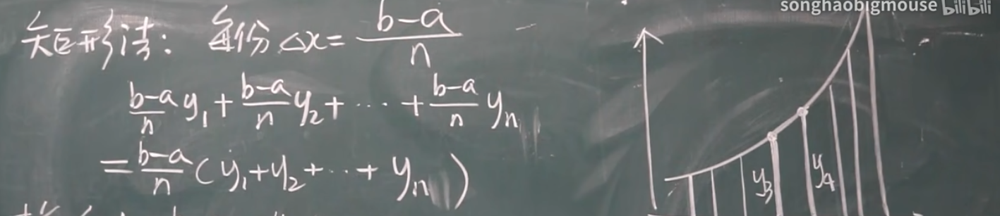
梯形法
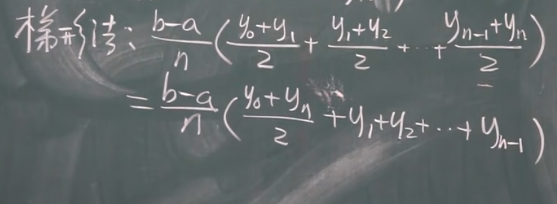
看看就好，不用他来计算
性质
1）a=b下：$\int_a^b f(x)dx=0$
2)$\int_a^b f(x)dx=-\int_b^a f(x)dx$
3)$\int_a^b (\alpha f(x)+\beta g(x))dx=\alpha \int_a^b f(x)dx+\beta\int_a^b g(x)dx$
4)$\int_a^b f(x)dx=\int_a^c f(x)dx+\int_c^b f(x)dx$(切成两块加)
5)$f(x)\equiv 1,\int_a^b 1dx=b-a,\int_a^b kdx=k(b-a)$
6)$f(x)\geq 0,\int_a^b f(x)dx\geq0$
7)$f(x)\leq 0,\int_a^b f(x)dx\leq0$
8)$f(x)\leq g(x),\int_a^b f(x)dx\leq\int_a^b g(x)dx$
来点推论：
1.
2.函数的极大值和极小值为$M,m$
9)定积分中值定理：$f(x)$连续,$\exists \xi\in[a,b]$
这个定理可以用来化简带有积分的极限
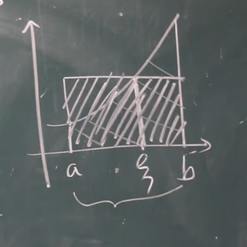
微积分的基本公式
积分上限函数
我们把一个限变成一个变量，有点像把一边可以自由滑动，这样就有一个变限积分函数，我们把目光集中在x上：
这样定积分就从一个值变成一个函数
定理1：
这样来看，$\phi(x)$就是$f(x)$的一个原函数。值得一提的是：
上面那个可能太抽象，可以使用性质2）插入一个常数点a
牛顿莱布尼兹公式
其中$F(x)$是$f(x)$的原函数。
例如：$\int_0^1 x^2dx$
解：=$\frac{1}{3}x^3|_0^1=\frac{1}{3}$
计算方法
换元法
定理：我们令$x=\varphi(t)$使之$\varphi(\alpha)=a,\varphi(\beta)=b$
例题：
1）$\int_0^a\sqrt{a^2-x^2}dx$
解：$令x=a\sin t$,$dx=a\cos tdt$
$=\int_0^{\frac{\pi}{2}}a^2\cos^2tdt=\frac{\pi}{4}a^2$
一些技巧：
1）$[-a,a]$下：$f(x)$偶：$\int_{-a}^{a}f(x)dx=2\int_{0}^{a}f(x)dx$,$f(x)$奇则为0。
2）$\int_{0}^{\frac{\pi}{2}}f(\sin x)dx=\int_{0}^{\frac{\pi}{2}}f(\cos x)dx$
3)$\int_{0}^{\pi}xf(\sin x)dx=\frac{\pi}{2}\int_0^{\pi}f(\sin x)dx$
（2）（3）怎么说？
2）令：$x=\frac{\pi}{2}-t,dx=-dt$就可以了
3）令：$x=\pi-t,dx=-dt$带入之后化简一下得到：
(上面中因为与积分变量无关由此可以直接替换)
例题：$\int_0^{\pi}\frac{x\sin x}{1+\cos^2x}dx=\frac{\pi}{2}\int_0^{\pi}\frac{\sin x}{1+\cos^2x}dx=-\frac{\pi}{2}\arctan(\cos x)|_0^\pi=\frac{\pi^2}{4}$
4)$\int_a^{a+T}f(x)dx=\int_0^Tf(x)dx$(f(x)是一个周期函数，周期是T)
5）$\int_a^{a+nT}f(x)dx=n\int_0^af(x)dx$
分部积分
首先回顾$\int udv=uv-\int vdu$这个公式，于是，在定积分的也自然就是：
例如：$\int _0^\frac{1}{2} \arcsin xdx$
注意到$x$也是一个函数：于是$\int _0^\frac{1}{2} \arcsin xdx=x\arcsin x|_0^\frac{1}{2} - \int_0^\frac{1}{2} \frac{x}{\sqrt {1-x^2} }dx=\frac{\pi}{12}+\frac{\sqrt 3}{2}-1$
也有上面提到的方法一块用的积分：
$\int_0^1 e^\sqrt{x}dx$
令:$t=\sqrt x$, 则:$2\int_0^1 te^tdt$=$2te^t|_0^1-2\int_0^1 e^tdt=2$
反常积分
无穷限的反常积分
什么叫反常积分呢？就是说积分区域下函数在这一点反常。比如说，因为积分区域含有无穷的积分：
或者是这样的：
这样的积分是无穷限的反常积分。我们不妨采用动态的方法：
这下也有类似的：
牵扯到了极限，因此：如果上面的极限是存在的，那就：之人格积分是收敛的，反之发散。
还有上下限均是无穷的积分，仍采用上面的处理方式。在实际求值的时候，也是直接
一个结论：对于
p>1收敛，p$\leq 1$手来你
反常积分：无界函数的反常积分
什么意思？就是说函数在某一点没有定义，我们的积分区域却包含了它。比如说
结合上一小节的类似方法，我们得到
类似的：
如果这样的点在中间，我们就拆开积分区域就好了。
补充：$\Gamma(s)$函数
$\Gamma(s)$函数是这样定义的：
具有以下非常好推导的性质：
基于2)，我们发现了这个函数的一个奇妙公式：
补充：比较审敛原理
我们假设:$f(x)$和$g(x)$在[a,$\infty$ ]上连续，$60 \leq f(x)\leq g(x)$如果：
很好理解：大哥收敛小弟也收敛，小弟嚣张大哥肯定也嚣张。
补充：比较审敛法
设$f(x)$在[a,$\infty$]连续(a>0)，且$f(x)\geq 0,\exists M>0,p>1$
如果使得:$f(x)\leq \frac{M}{x^p}$那就$\int_a^{+\infty}f(x)dx$收敛
反之：$f(x)\geq \frac{M}{x},$那就$\int_a^{+\infty}f(x)dx$发散
补充：绝对审敛法
如果$f(x)$在设$f(x)$在[a,$\infty$]连续（a>0), $\int_a^{+\infty}|f(x)|dx$收敛，那么$\int_a^{+\infty}f(x)dx$收敛。
最后不难得到这个定理
补充：无界函数反常积分的审敛法
回到这个积分
$x=a$显然是一个瑕点$q<1$收敛，q$\geq$1发散。
基于这个积分，我们再次应用比较原理：
如果$f(x)$在(a,b]连续,f(x)$\geq$0,如果$\exists M>0$及其$q<1$使得
补充：极限审敛法
如果$f(x)$在(a,b]连续,f(x)$\geq$0，$x=a$为$f(x)$的瑕点
1）$\exists 0<q<1$使得$\lim\limits_{x\rightarrow a^+}(x-a)^qf(x)=A$直接说明一件事：$\int_a^b f(x)dx$收敛。
2）类比的$\lim\limits_{x\rightarrow a^+}(x-a)f(x)=A$或者是$\infty$，我们直接认为$\int_a^b f(x)dx$发散。
定积分的元素法
回到定积分的这个定义式：
本质上，这样的一个定积分就是描述瞬时元素在某一个维度的积累效应的量化程度，这就是说：它既可以用来描述面积，又可以描述体积，只需要我们掌握了相应的边界函数，只要对应积分即可。
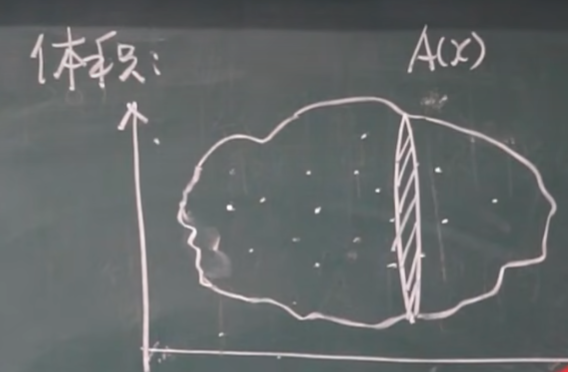
比如说，这个的体积就是面积函数A(x)对于高度x的积分
补充一下极坐标
我们重新用一种全新的角度来看待坐标系：我们改用距离原点的距离+偏离X轴正方向的描述方法描述点的坐标。
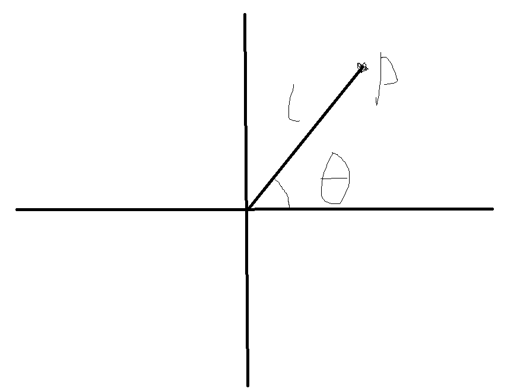
这样，一个点就总是可以表示为$A=(\rho, \theta)$，比如说极坐标下(1,1)变成了$(\sqrt 2,\frac{\pi}{4})$,现在，我们试着求：
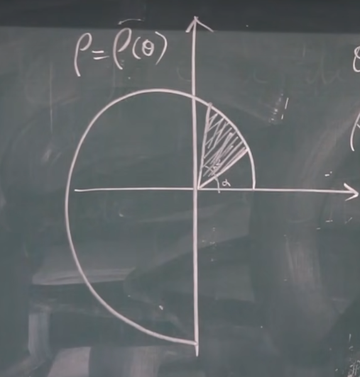
这个阴影面积：怎么办？延续老方法：假设点沿着曲线挪动一丁点，那么我们的产生的微小的面积则是：
然后从哪到哪？$\alpha$到$\beta$。
结束。
平面图形的面积
直角坐标系
我们说函数相交也可以产生一些面积
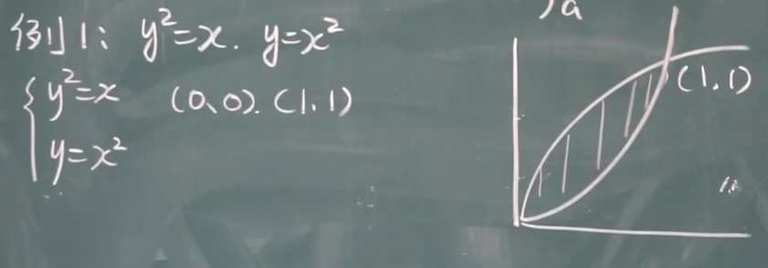
这个怎么求呢？
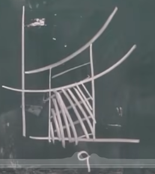
我们的差面积就是：
这样的差是X型的面积积分，因为我们拿X作为梯形的高
那就还有Y型面积：
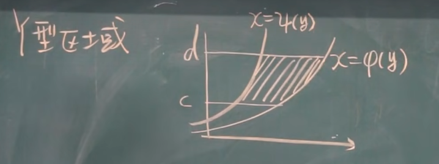
类比的：
也即是：
X:$S=\int 上-下dx$
Y:$S=\int 右-左dy$
总结一下：我们对面积先大致画出来图长什么样：如果是这样的
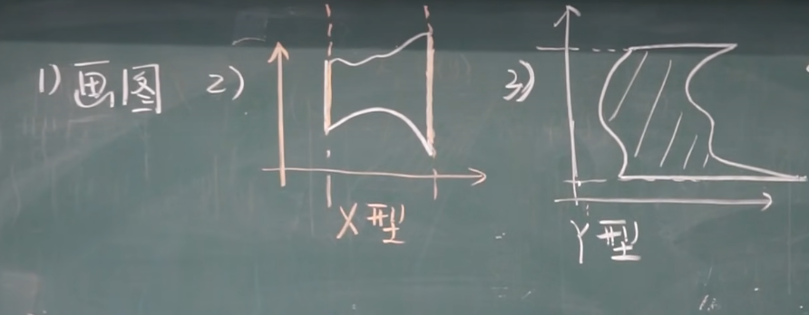
就这样使用X，Y对应当打，如果不好判断，就都先试试，哪个更加容易用哪个。
举例：求$y=\frac{1}{2}x^2$,$y=\frac{1}{1+x^2}$在$x \in [-\sqrt 3,\sqrt 3]$下的定积分。
我们可以做出图像：

砍开来看：
随后使用偶函数的对称性结束计算。
求椭圆的面积：$\frac{x^2}{a^2}+\frac{y^2}{b^2}=1$
可以拆开四分之一的部分$S_1=\int_0^aydx$
现在，我们引入椭圆参数方程来消去参数：
来看看变成什么了：
这就是为什么：
极坐标下
回忆前面所叙述的：对于方程$R=\rho (\theta)$
比如说：$\rho=a\theta$
旋转体体积求法
说白了可以切成以$f(x)$为半径的圆，在叠起来（求积分）
是通过
派生来的，只是因为面积恰好是圆。
但是，这样的体积求解的是绕X轴的。绕Y轴的怎么办哪？
简单：那就改写方程为$x=x(y)$就好了：
弧长的求解
通用：
回来看看这个参数方程：
弧微分很容易说：
于是：
作为积分结果，就是弧长。
以此为源头，开始推广其他的公式：
直角坐标系下
假如参数方程很容易被表达为$y=y(x)$，那我们就：
那带入：
再积分：
极坐标系下
如果不知道的话：科普一下
所有呢，求个导：
老样子：
嘛，不就完事了！
向量与线性计算
向量
一个有大小，又有方向的量 我们有概念：模长（长度），假使 向量被记作:$\vec\alpha$，则它的长度就是它的模长：$|\vec\alpha|$,
我们又让长度就是1的向量成为单位向量。长度是0的向量是零向量。
位置关系上：有共线，垂直和相等的关系。
平行指的是夹角是0或者是180度。垂直就是90度等。
线性运算
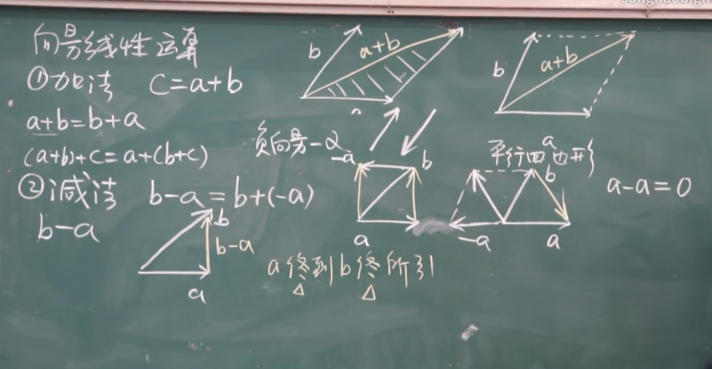
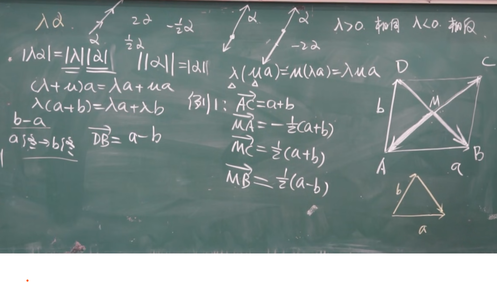

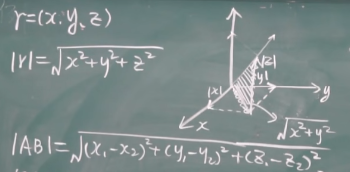
方向余弦
我们有时只考虑方向，我们可以把它归一化：这需要：
其中：$r=\sqrt{x^2+y^2+z^2}$
有时也这样记：
由于这样，我们可以把任意向量拆解为方向向量和长度的数量积
投影
定义
我们实际上可以使用如下的公式来计算一个向量在另一个向量的投影
$\varphi$ 是两个向量的夹角
性质：
数量积
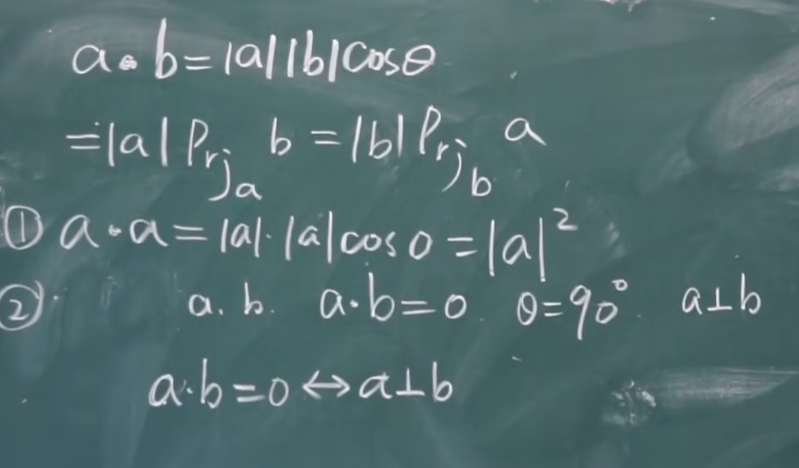
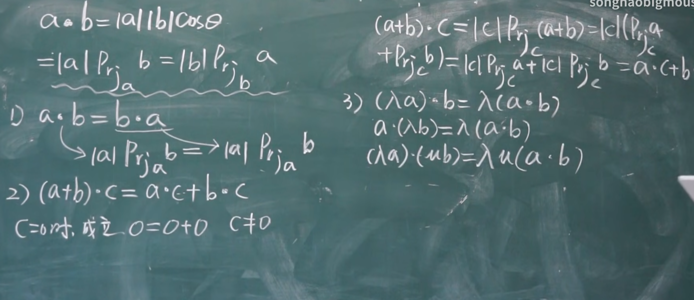
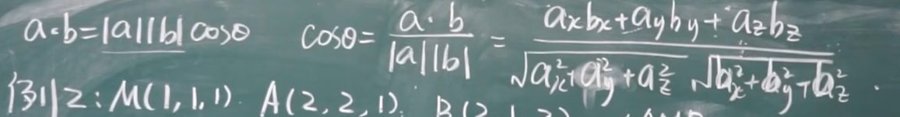
向量积
这是我们不熟悉的：
首先模长是：
方向：右手从a到b。
注意结果是一个向量！
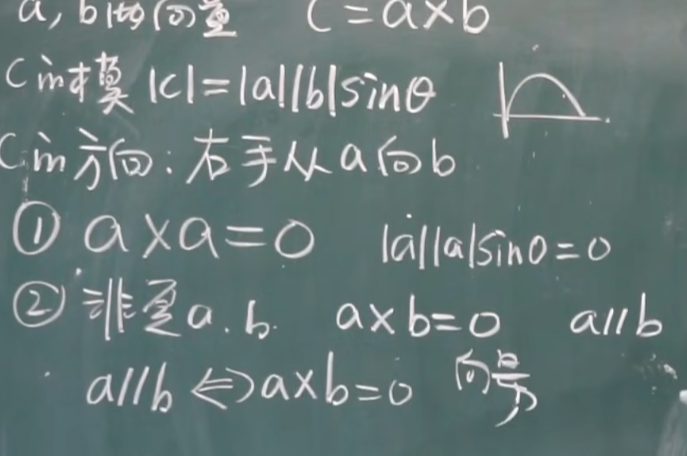
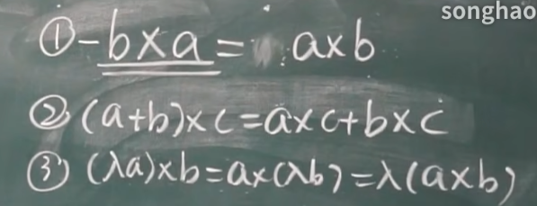
平面
曲面
曲面可以看成运动曲线的结果，我们常常使用方程：
来描述！
由此，曲线可以视作两个曲面的交：
其法线垂直于平面。
求解
点法式
如果我们已知一个点和一个法线：我们可以求出方程：
已知：$n(A,B,C)，M(x_0,y_0,z_0)$
一般式
拆开上面的式子，将常数化作一个指标D
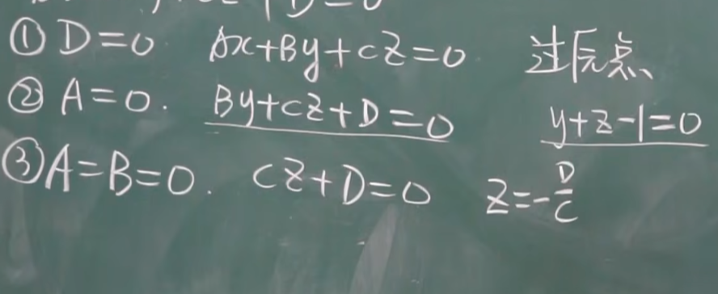
平面的夹角
我们回忆高中两直线的夹角：
平面是一样的：
只不过：
推广了一个维度！
空间直线与方程
回到这个概念：
曲线可以视作两个曲面的交：
直线就是：
对称式
如果已知：$M(x_0,y_0,z_0),S(m,n,p)$则：
参数式
就是在对称式的基础上加上了等于T的条件！
平面与直线的夹角
类似的，我们可以得到：
于是：
曲面
旋转曲面
由曲线旋转产生
假设我们原先的曲线的方程是：$f(y,z)=0$，他显然位于$yOz$平面上，其上有一点:$M_1(0,y_1,z_1)$
旋转之后：$M(x,y,z)$一定有：
于是：
相同的办法推理：对于$f(y,z)=0$绕Y轴旋转：
绕谁转，谁不变：剩下两个在旁边。
曲面类型
柱面：
把一个平面作为准线，沿一条线（母线）移动：
是一个代表
如果是抛物线：就产生抛物面：
缺什么以什么为准线移动！
二次曲面
1）椭圆锥面
只要令$z=t$，我们马上发现这就是个椭圆
这里引入伸缩的概念：我们对变量可以伸缩：拉长或缩短，直接是令$y’=\lambda y$带入方程来看
2）椭球面
3)单叶双曲面
本质上是$\frac{x^2}{a^2}-\frac{z^2}{c^2}=1$先绕Y轴旋转，随后伸缩$\frac{b}{a}$倍数
4）双叶双曲面
5）椭圆抛物面：
可以看作一个$P^2=C$的类抛物线看待
6）双曲抛物面
平面点集
下面我们要引入多元函数，这就要求我们需要有点集的概念：我们定义一些点，如果满足一些特有的性质，就称之为他们是一个点集：
我们举个例子：一些点再一个半径为R的圆上：
由于在平面上更有扩展性，我们就需要引入跟一元函数一样的概念：领域，这一次指的是P周围的地方：记作
点有几种：在一个圈住的特定范围下：有外点（不属于），边界点（处于边界），内点（就属于里面）
对于这些集合：有开集，闭集（就是说白了：取不取等的问题），有有界集无界集的概念，这里不多做阐述。
N维空间
N维空间表示
说白了，就像二维空间只用两个分量表达就可以阐述完全一样。
多元函数的极限
比较一下：我们的一元函数的极限是单一主元趋向一个值：$x\rightarrow x_0$,一元函数也是这样的逼近！（从左边逼近，从右边逼近）。
那么多元函数又如何？（多元函数就像是：z=x+2y这样的玩意），注意到这一次我们的点可以在平面上移动而不是在线上移动！
这样的逼近方式是任意方式逼近的，这就让我们：可以直线逼近，可以曲线逼近！
如此：如果就算这样我们的极限值还是都不变：那么我们说函数的极限存在
举个例子：$f(x,y)=(x^2+y^2)\sin\frac{1}{x^2+y^2}$求解：
很容易看出：$\sin\frac{1}{x^2+y^2}$有界的，这样，函数极限怎么样都是0！
如果极限不满足任何方式逼近相等，那就不存在！
比如说：求解$\lim\limits_{(x,y)\rightarrow (x_0,y_0)}f(x,y)$
只需要：$y=kx$逼近:
而若是：$y=-kx$逼近：
这下显然不存在了！
偏导数
基本定义
在一元导数中，我们这样定义导数：
类似的，我们的多元函数不过就是多个主元一同影响函数值！这就是为什么我们的导数多了一个“偏”：如果说我们有一个函数$z=f(x,y)$，我们把目光聚焦在$x$上：我们就说$z$对$x$的偏导数就是这样定义的：
当然还有这个简单的写法：
1）$z_x’$ 2）$f’_x(x,y)$
试试看，对$y$的偏导又是如何？
实际上，我们直接其他变量视作常数就好了
1）$z=x^2+3xy+y^2$在（1,2）处求偏导:
带入值就好了！
几何含义
说白了还是切线，不过是什么方向上的切线而已：过对应点切面产生的曲线的切线
注意
对于一元函数来讲：可导一定连续！
对于二元函数来讲，可导不一定连续（因为此时退化为偏导，只是一个方向才是连续，其他的方式不一定！此时一个函数的连续指的是函数怎么逼近都是连续）
高阶偏导
因为主元具有多样性：在二阶偏导中，有了：
注意到：中间两个我们先后对函数的不同变量求导，故称之为混合偏导：当函数连续的时候：$z’’_{xy}=z’’_{yx}$
全微分
可微的定义
还是跟微分很是相似：$\Delta z_x=f(x_0+\Delta x,y_0)-f(x_0,y_0)$是对X的偏增量，$\Delta z_y=f(x_0,y_0+\Delta y)-f(x_0,y_0)$是对Y的偏增量。现在，我们让两个都变：这就是全微分
定义：如果这个$\Delta z=A\Delta x+B\Delta y+o(\rho)$其中A，B还是跟增量无关的一个函数，随后就会有：
可微的必要条件
定理：若z=f(x,y)在点( x,y )处可微，则偏导数$f’_x(x,y),f’_y(x,y)$存在且：
还是跟上一个一样：偏导数只是说明了一个方向上可微，其他的不一定。
可微的充分条件
如果：$f(x,y)$在(x,y)的某一个领域内有连续的偏导数$f’_x(x,y),f’_y(x,y)$那就说明（x,y）是可微的：
求导法则
现在事情准备复杂起来！我们利用链式求导法则
情况1：$z=f(u,v),u=\phi(t),v=\varphi(t)$求导！
注意，跟复合类似，结合我们之前的固有经验：
情况2：$z=f(u,v),u=\phi(x,y),v=\varphi(x,y)$求导
情况3：$z=f(u,v,w),u=\phi(x,y),v=\varphi(x,y),w=\omega(x,y)$
情况4：$z=f(u,x,y),u=\varphi(x,y)$
例子：$z=e^u \sin v , u=xy , v=x+y$
$解: \frac{\partial z}{\partial x}=e^u\cdot \sin v\cdot y+e^u\cos v=e^{xy}\sin(x+y)y+e^{xy}\cos(x+y)\\
\frac{\partial z}{\partial x}=e^u\cdot \sin v\cdot x+e^u\cos v=e^{xy}\sin(x+y)x+e^{xy}\cos(x+y)$
隐函数的求导公式
对于$F(x,y)=0$这个方程：
对于 $F(x,y,z)=0,F’_z(x_0,y_0,z_0)\neq 0$
对于方程组的情况
稍微复杂一点：
定义Jacobi行列式：
其他类比
由线性代数里的克莱默法则推出。但是太难背了！我们可以直接对方程求导，然后解方程组就好了
一元向量值函数及其导数
定义
可以看到，我们对于空间点的坐标可以使用
这样的方式表达！
于是对于一个点，可以使用一个类似于函数的表达方式：
极限
定义：
当
下，我们可以记作：
导数
现在定义：
于是展开，可以得到：
相关求导法则
跟数量函数一致，我们来看：
空间曲线的切线与法平面
回到上面我们讲到的：一个空间曲线的切向量就是：
于是切线方程就是：
法平面：
对于方程式形式的，还是跟上一节的方程组求导一致
空间曲面的切平面和法线
1.$F(x,y,z)=0$
切平面：
法线：
2.$z=f(x,y)$
挪个位置：$F(x,y,z)=f(x,y)-z$
切平面：
法线：
方向导数
求方向导数，可以理解为曲面上的点$P(x_0,y_0)$出发的一条射线
我们出发产生的射线方程：
这个时候：
可以看作：F（x,y）在方向L上的偏导数！，方向导数这一节就是对偏导的推广！
但是，我们的方向导数是射线，是从一个方向逼近的，于是有：
方向导数存在，但是偏导未必因此存在！想要成为充要条件，则需要正负两个方向导数相等 定理：若函数$f(x,y)$在$(x_0,y_0)$可微，方向导数存在且$\frac{\partial f}{\partial l}|_{(x_0,y_0)}=f’_x\cos \alpha+f_y’\cos \beta $
关系整理

梯度
定义：
为梯度，他是个向量！
回到这里：
1)当$\theta=0$,此时方向导数最大，于是
梯度是在这一点方向导数取最大值的方向 2）当$\theta = \pi$,此时方向导数最小，为$|-gradf(x_0,y_0)|$
3)当$\theta = \frac{\pi}{2}$此时，方向导数为0，可以看作平行于等高线了！也可以理解为：在这个方向增长最快。
极大值（极小值）
定理一：极值必要条件：
$z=f(x,y)偏导，且(x_0,y_0)是极值点，则f’_x(x_0,y_0)=0,f’_y(x_0,y_0)=0$
驻点：$f’_x(x_0,y_0)=0,f’_y(x_0,y_0)=0$同时成立！
定理二：充分条件
$A=f’’_{xx}(x_0,y_0),B=f’’_{xy}(x_0,y_0),C=f’’_{yy}(x_0,y_0)$
则：
1）$AC>B^2$:极值，且$A>0是极小值，A<0是极大值$
2）$AC<B^2$:不是极值
3）$AC=B^2$:另作判断！
条件极值
什么叫条件极值，就是在一定约束之下函数的最大值，于是拉格朗日数乘就有：
实际上，我们常常直接构造拉格朗日函数：
二重积分
概念
他表示一个曲顶柱体的体积，现在把区间里的小区快切割一下
现在朝上面做一个柱体，产生了一个微元体积
现在对小区间求和：
这个$\lambda$每个小区域的大小。若这个的极限存在，那就有：
性质
1）
2)如果$D = D_1+D_2$,然后就有
3)对于$f(x,y) \equiv 1$
4)$f(x,y)\leq g(x,y)$
5)
6)假设$m\leq f(x,y)\leq M$,
推广：
计算(直角坐标)
假设截面是这个
于是，可以看作先对 y 再对 x做积分：
于是：
例题1：
$\iint_D xyd\sigma,y=1,x=2,y=x$
原式=$\int_1^2\int_{1}^{x}xydydx=\int_1^2x[\frac{y^2}{2}|_1^x]dx=\int_1^2{x(\frac{x^2}{2}-\frac{1}{2})}=\frac{x^4}{8}-\frac{x^2}{4}|_1^2=\frac{9}{8}$
我们也有先对X再对Y做积分：
注意，对于Y，左边是下限，右边是上限
例题2：
$\iint_D y\sqrt{1+x^2-y^2}d\sigma,D:y=x,x=-1,y=1$
法一：$\int_{-1}^1dx\int_{x}^{1}y\sqrt{1+x^2-y^2}dy=0.5$
法二：$\int_{-1}^1dy\int_{-1}^{y}y\sqrt{1+x^2-y^2}dx$
总结
对于积分区域是长方形的：
对于积分区域是长方形的，且f(x,y)=$f_1(x)f_2(x)$
计算（极坐标）
主要应用在曲线（圆类）比较多
于是：
小心不要丢掉$\rho$!
如：
例题:$\iint_D e^{-x^2-y^2}dxdy$
做代换，得到：
一个重要的推论：
同时，作为长方形底面积式子：得到：
于是有一个著名的结论：
例子：$\iint_D \arctan\frac{y}{x}dxdy$
D见上图：
解答：=$\int_0^{\frac{\pi}{4}}d\theta \int_1^3 \arctan(\tan\theta)\rho d\rho=\int_0^{\frac{\pi}{4}}\theta\int_1^3\rho d\rho=\frac{\pi^2}{8}$
二重积分的换元法
首先可以有：
作为一个经典的变换！对于更一般的：
1)$x=x(u,v),y=y(u,v)$
2)$J_{(u,v)}=\frac{\partial (x,y)}{\partial (u,v)}$下：
例题：$\iint_D e^{\frac{y-x}{y+x}}dxdy$
令：$u=y-x,v=y+x$于是：
->
三重积分
定义：
可以理解为：将密度考虑成一个关于空间的函数即可，然后在原有空间上增加一个维度！
使用切丝法逐步切：
例如：
例如：$\iiint_D z^2dxdydz$,$D:\frac{x^2}{a^2}+\frac{y^2}{b^2}+\frac{z^2}{c^2}=1$
而长轴短轴的变化是：
故：因为椭圆的面试是$\pi a’b’$
柱面坐标
使用：
表达坐标的系统叫柱坐标系统！
对于一个长方体：$a \leq x \leq b,c \leq x \leq d,e \leq x \leq f$且函数可以完全分离：